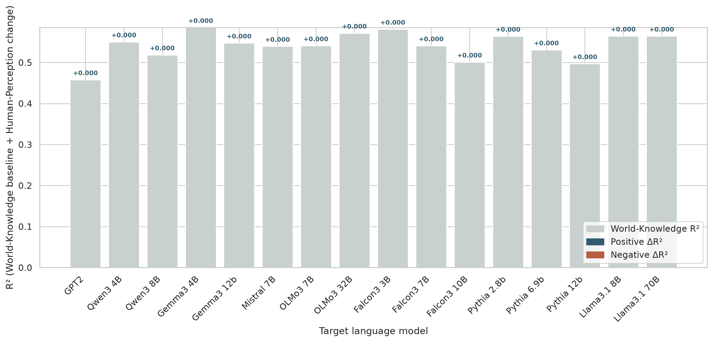
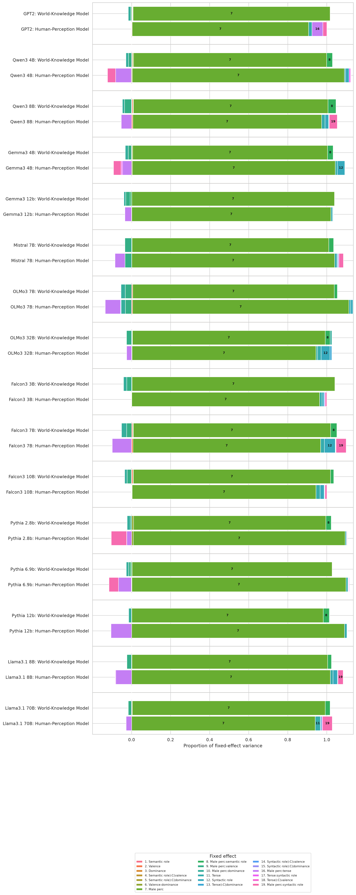
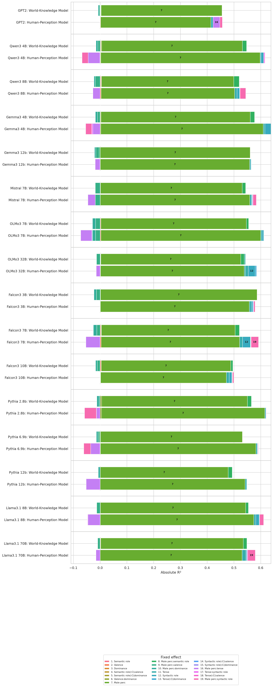
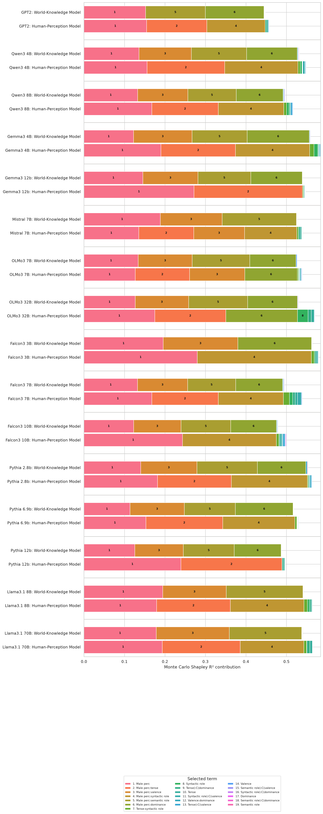

World-Knowledge and Human-Perception Models
LassoCV-selected and OLS-refit interaction models for he/she log odds. MalePerc is joined from the first-column profession list in professions.csv and z-scored before fitting; valence and dominance are categorical predictors. Generated on 2026-07-30.
Model Fit
Show table
| Input | Model | N | aic | bic | R2 | Residual variance |
|---|---|---|---|---|---|---|
| Pythia 12b | Human-Perception Model | 16320 | 54573.387 | 54742.790 | 0.497 | 1.657 |
| Pythia 12b | World-Knowledge Model | 16320 | 54848.956 | 54933.657 | 0.487 | 1.686 |
| Pythia 2.8b | Human-Perception Model | 16320 | 46041.912 | 46288.317 | 0.562 | 0.982 |
| Pythia 2.8b | World-Knowledge Model | 16320 | 46348.945 | 46425.946 | 0.553 | 1.002 |
| Pythia 6.9b | Human-Perception Model | 16320 | 51828.442 | 52090.247 | 0.530 | 1.399 |
| Pythia 6.9b | World-Knowledge Model | 16320 | 52209.448 | 52278.749 | 0.518 | 1.434 |
| Qwen3 4B | Human-Perception Model | 16320 | 48251.334 | 48505.439 | 0.548 | 1.124 |
| Qwen3 4B | World-Knowledge Model | 16320 | 48793.199 | 48877.901 | 0.532 | 1.163 |
| Qwen3 8B | Human-Perception Model | 16320 | 50331.203 | 50569.907 | 0.516 | 1.277 |
| Qwen3 8B | World-Knowledge Model | 16320 | 50953.458 | 51030.460 | 0.496 | 1.328 |
| OLMo3 7B | Human-Perception Model | 16320 | 50161.219 | 50423.024 | 0.539 | 1.263 |
| OLMo3 7B | World-Knowledge Model | 16320 | 50551.700 | 50613.301 | 0.526 | 1.296 |
| OLMo3 32B | Human-Perception Model | 16320 | 50680.811 | 50842.514 | 0.570 | 1.305 |
| OLMo3 32B | World-Knowledge Model | 16320 | 52123.785 | 52177.686 | 0.529 | 1.427 |
| Gemma3 12b | Human-Perception Model | 16320 | 47588.960 | 47796.864 | 0.547 | 1.079 |
| Gemma3 12b | World-Knowledge Model | 16320 | 47824.788 | 47909.489 | 0.539 | 1.096 |
| Gemma3 4B | Human-Perception Model | 16320 | 44348.435 | 44594.839 | 0.584 | 0.885 |
| Gemma3 4B | World-Knowledge Model | 16320 | 45273.989 | 45358.690 | 0.559 | 0.938 |
| GPT2 | Human-Perception Model | 16320 | 45749.199 | 45903.202 | 0.456 | 0.965 |
| GPT2 | World-Knowledge Model | 16320 | 45985.098 | 46062.099 | 0.448 | 0.979 |
| Llama3.1 70B | Human-Perception Model | 16320 | 45481.856 | 45674.359 | 0.564 | 0.949 |
| Llama3.1 70B | World-Knowledge Model | 16320 | 46353.526 | 46430.527 | 0.539 | 1.002 |
| Llama3.1 8B | Human-Perception Model | 16320 | 47320.143 | 47528.047 | 0.564 | 1.062 |
| Llama3.1 8B | World-Knowledge Model | 16320 | 48104.531 | 48166.132 | 0.541 | 1.115 |
| Mistral 7B | Human-Perception Model | 16320 | 47762.272 | 47970.176 | 0.538 | 1.091 |
| Mistral 7B | World-Knowledge Model | 16320 | 48153.409 | 48222.710 | 0.526 | 1.119 |
| Falcon3 10B | Human-Perception Model | 16320 | 49788.718 | 49973.522 | 0.499 | 1.235 |
| Falcon3 10B | World-Knowledge Model | 16320 | 50408.025 | 50492.727 | 0.479 | 1.284 |
| Falcon3 3B | Human-Perception Model | 16320 | 42346.782 | 42477.685 | 0.579 | 0.783 |
| Falcon3 3B | World-Knowledge Model | 16320 | 42921.200 | 42982.801 | 0.563 | 0.812 |
| Falcon3 7B | Human-Perception Model | 16320 | 45524.536 | 45732.440 | 0.538 | 0.951 |
| Falcon3 7B | World-Knowledge Model | 16320 | 46967.146 | 47051.848 | 0.495 | 1.040 |

R² Change: Human-Perception vs World-Knowledge
Each vertical bar starts at the World-Knowledge model's absolute R² (gray). The attached segment is the change after switching to the Human-Perception model: blue indicates an increase and red a decrease. Labels give the signed ΔR².

Fixed-Effect Variance
Variance is decomposed across the fixed effects in the Lasso-selected OLS models. Segment numbers in the horizontal bars map to the indexed legend below the plots.
Show table
| Input | Model | Semantic role | Valence | Dominance | Semantic role):C(valence | Semantic role):C(dominance | Valence:dominance | Male perc | Male perc:semantic role | Male perc:valence | Male perc:dominance | Tense | Syntactic role | Tense):C(dominance | Syntactic role):C(valence | Syntactic role):C(dominance | Male perc:tense | Tense:syntactic role | Tense):C(valence | Male perc:syntactic role |
|---|---|---|---|---|---|---|---|---|---|---|---|---|---|---|---|---|---|---|---|---|
| Pythia 12b | Human-Perception Model | NaN | NaN | 0.000 | NaN | NaN | NaN | 1.779 | NaN | NaN | NaN | 0.020 | 0.000 | 0.002 | 0.000 | 0.002 | -0.172 | NaN | NaN | NaN |
| Pythia 12b | World-Knowledge Model | 0.000 | -0.000 | 0.000 | 0.000 | -0.000 | 0.000 | 1.570 | 0.050 | 0.004 | -0.023 | NaN | NaN | NaN | NaN | NaN | NaN | NaN | NaN | NaN |
| Pythia 2.8b | Human-Perception Model | NaN | NaN | NaN | NaN | NaN | 0.011 | 1.366 | NaN | NaN | NaN | 0.008 | NaN | 0.001 | NaN | NaN | -0.031 | 0.004 | -0.001 | -0.099 |
| Pythia 2.8b | World-Knowledge Model | 0.001 | NaN | NaN | NaN | 0.000 | 0.011 | 1.220 | 0.034 | -0.009 | -0.019 | NaN | NaN | NaN | NaN | NaN | NaN | NaN | NaN | NaN |
| Pythia 6.9b | Human-Perception Model | NaN | -0.001 | 0.001 | NaN | NaN | 0.001 | 1.728 | NaN | NaN | NaN | 0.016 | NaN | 0.002 | 0.002 | 0.002 | -0.104 | 0.005 | 0.002 | -0.077 |
| Pythia 6.9b | World-Knowledge Model | 0.000 | 0.001 | 0.000 | NaN | NaN | 0.001 | 1.576 | -0.010 | -0.014 | -0.018 | NaN | NaN | NaN | NaN | NaN | NaN | NaN | NaN | NaN |
| Qwen3 4B | Human-Perception Model | NaN | -0.001 | 0.001 | NaN | NaN | 0.005 | 1.479 | NaN | NaN | NaN | 0.007 | 0.024 | -0.000 | 0.000 | NaN | -0.110 | 0.009 | 0.004 | -0.057 |
| Qwen3 4B | World-Knowledge Model | 0.004 | -0.000 | 0.000 | 0.000 | 0.004 | 0.005 | 1.307 | 0.040 | -0.021 | -0.018 | NaN | NaN | NaN | NaN | NaN | NaN | NaN | NaN | NaN |
| Qwen3 8B | Human-Perception Model | NaN | 0.007 | 0.001 | NaN | NaN | NaN | 1.315 | NaN | NaN | NaN | 0.024 | 0.025 | 0.002 | NaN | NaN | -0.072 | 0.002 | -0.001 | 0.056 |
| Qwen3 8B | World-Knowledge Model | 0.003 | 0.007 | 0.001 | 0.002 | NaN | -0.000 | 1.303 | 0.054 | -0.048 | -0.014 | NaN | NaN | NaN | NaN | NaN | NaN | NaN | NaN | NaN |
| OLMo3 7B | Human-Perception Model | NaN | 0.007 | -0.000 | NaN | NaN | NaN | 1.635 | NaN | -0.047 | -0.031 | 0.013 | 0.017 | 0.003 | -0.004 | -0.001 | -0.115 | -0.002 | 0.001 | NaN |
| OLMo3 7B | World-Knowledge Model | 0.001 | 0.006 | 0.000 | NaN | NaN | NaN | 1.487 | 0.023 | -0.047 | -0.031 | NaN | NaN | NaN | NaN | NaN | NaN | NaN | NaN | NaN |
| OLMo3 32B | Human-Perception Model | NaN | 0.003 | 0.001 | NaN | NaN | NaN | 1.628 | NaN | NaN | 0.014 | 0.032 | 0.079 | 0.015 | NaN | NaN | -0.044 | NaN | NaN | NaN |
| OLMo3 32B | World-Knowledge Model | NaN | 0.003 | 0.003 | NaN | NaN | NaN | 1.586 | 0.040 | -0.042 | 0.014 | NaN | NaN | NaN | NaN | NaN | NaN | NaN | NaN | NaN |
| Gemma3 12b | Human-Perception Model | NaN | 0.001 | NaN | NaN | NaN | NaN | 1.327 | NaN | NaN | NaN | 0.010 | 0.004 | 0.001 | -0.000 | 0.002 | -0.044 | 0.000 | NaN | NaN |
| Gemma3 12b | World-Knowledge Model | NaN | 0.000 | 0.000 | 0.000 | 0.000 | 0.000 | 1.333 | -0.010 | -0.028 | -0.012 | NaN | NaN | NaN | NaN | NaN | NaN | NaN | NaN | NaN |
| Gemma3 4B | Human-Perception Model | NaN | 0.000 | NaN | NaN | NaN | 0.005 | 1.290 | NaN | NaN | NaN | 0.013 | 0.048 | 0.001 | NaN | NaN | -0.058 | -0.008 | -0.001 | -0.048 |
| Gemma3 4B | World-Knowledge Model | NaN | NaN | -0.001 | 0.001 | 0.000 | 0.005 | 1.185 | 0.034 | -0.020 | -0.018 | NaN | NaN | NaN | NaN | NaN | NaN | NaN | NaN | NaN |
| GPT2 | Human-Perception Model | NaN | 0.002 | NaN | NaN | NaN | NaN | 0.731 | NaN | NaN | NaN | 0.014 | NaN | -0.001 | NaN | NaN | 0.045 | NaN | NaN | 0.017 |
| GPT2 | World-Knowledge Model | 0.002 | 0.002 | 0.001 | 0.000 | 0.000 | 0.000 | 0.801 | -0.003 | NaN | -0.010 | NaN | NaN | NaN | NaN | NaN | NaN | NaN | NaN | NaN |
| Llama3.1 70B | Human-Perception Model | NaN | NaN | NaN | NaN | NaN | NaN | 1.153 | NaN | NaN | NaN | 0.032 | 0.002 | 0.007 | NaN | NaN | -0.034 | 0.005 | NaN | 0.061 |
| Llama3.1 70B | World-Knowledge Model | NaN | -0.000 | 0.003 | 0.000 | -0.000 | 0.000 | 1.158 | 0.029 | -0.019 | NaN | NaN | NaN | NaN | NaN | NaN | NaN | NaN | NaN | NaN |
| Llama3.1 8B | Human-Perception Model | NaN | NaN | NaN | NaN | NaN | 0.001 | 1.395 | NaN | NaN | NaN | 0.018 | 0.031 | 0.004 | NaN | NaN | -0.111 | -0.003 | NaN | 0.037 |
| Llama3.1 8B | World-Knowledge Model | 0.000 | -0.000 | 0.001 | NaN | NaN | 0.001 | 1.319 | 0.026 | -0.031 | NaN | NaN | NaN | NaN | NaN | NaN | NaN | NaN | NaN | NaN |
| Mistral 7B | Human-Perception Model | NaN | 0.000 | 0.001 | NaN | NaN | NaN | 1.317 | NaN | -0.043 | NaN | 0.016 | 0.002 | 0.005 | NaN | NaN | -0.065 | 0.004 | NaN | 0.029 |
| Mistral 7B | World-Knowledge Model | NaN | 0.000 | 0.001 | 0.000 | 0.001 | NaN | 1.249 | 0.031 | -0.043 | NaN | NaN | NaN | NaN | NaN | NaN | NaN | NaN | NaN | NaN |
| Falcon3 10B | Human-Perception Model | NaN | 0.002 | NaN | NaN | NaN | 0.002 | 1.158 | NaN | NaN | NaN | 0.026 | 0.025 | NaN | 0.003 | 0.002 | NaN | -0.000 | 0.001 | 0.012 |
| Falcon3 10B | World-Knowledge Model | 0.000 | 0.008 | -0.000 | -0.001 | 0.000 | 0.002 | 1.193 | 0.019 | -0.026 | -0.015 | NaN | NaN | NaN | NaN | NaN | NaN | NaN | NaN | NaN |
| Falcon3 3B | Human-Perception Model | NaN | NaN | 0.001 | NaN | NaN | NaN | 1.034 | NaN | NaN | NaN | 0.013 | 0.010 | NaN | 0.004 | NaN | NaN | 0.003 | NaN | 0.009 |
| Falcon3 3B | World-Knowledge Model | NaN | 0.001 | 0.001 | -0.000 | NaN | NaN | 1.087 | NaN | -0.026 | -0.017 | NaN | NaN | NaN | NaN | NaN | NaN | NaN | NaN | NaN |
| Falcon3 7B | Human-Perception Model | NaN | 0.007 | NaN | NaN | NaN | NaN | 1.065 | NaN | NaN | NaN | 0.022 | 0.061 | 0.003 | -0.001 | NaN | -0.109 | 0.002 | NaN | 0.057 |
| Falcon3 7B | World-Knowledge Model | NaN | 0.006 | 0.001 | 0.000 | 0.001 | 0.001 | 1.029 | 0.033 | -0.026 | -0.027 | NaN | NaN | NaN | NaN | NaN | NaN | NaN | NaN | NaN |


Selected Coefficients

Show table
| target_model | Model | Term | Estimate | Std. error | t | p value | CI low | CI high |
|---|---|---|---|---|---|---|---|---|
| EleutherAI_pythia-12b-deduped | World-Knowledge Model | Intercept | 1.296 | 0.027 | 48.202 | 0.000 | 1.243 | 1.349 |
| EleutherAI_pythia-12b-deduped | World-Knowledge Model | Semantic role (patient) | 0.077 | 0.035 | 2.191 | 0.028 | 0.008 | 0.146 |
| EleutherAI_pythia-12b-deduped | World-Knowledge Model | Valence (+val) | 0.073 | 0.035 | 2.071 | 0.038 | 0.004 | 0.142 |
| EleutherAI_pythia-12b-deduped | World-Knowledge Model | Dominance (+dom) | 0.079 | 0.035 | 2.234 | 0.025 | 0.010 | 0.148 |
| EleutherAI_pythia-12b-deduped | World-Knowledge Model | Semantic role) (patient):C(valence (+val) | -0.088 | 0.041 | -2.175 | 0.030 | -0.168 | -0.009 |
| EleutherAI_pythia-12b-deduped | World-Knowledge Model | Semantic role) (patient):C(dominance (+dom) | -0.024 | 0.041 | -0.587 | 0.557 | -0.104 | 0.056 |
| EleutherAI_pythia-12b-deduped | World-Knowledge Model | Valence (+val):dominance (+dom) | -0.084 | 0.041 | -2.067 | 0.039 | -0.164 | -0.004 |
| EleutherAI_pythia-12b-deduped | World-Knowledge Model | Male perc | 1.242 | 0.020 | 61.103 | 0.000 | 1.202 | 1.282 |
| EleutherAI_pythia-12b-deduped | World-Knowledge Model | Male perc:semantic role (patient) | 0.076 | 0.020 | 3.750 | 0.000 | 0.036 | 0.116 |
| EleutherAI_pythia-12b-deduped | World-Knowledge Model | Male perc:valence (+val) | 0.006 | 0.020 | 0.274 | 0.784 | -0.034 | 0.045 |
| EleutherAI_pythia-12b-deduped | World-Knowledge Model | Male perc:dominance (+dom) | -0.038 | 0.020 | -1.852 | 0.064 | -0.077 | 0.002 |
| EleutherAI_pythia-12b-deduped | Human-Perception Model | Intercept | 1.218 | 0.040 | 30.232 | 0.000 | 1.139 | 1.297 |
| EleutherAI_pythia-12b-deduped | Human-Perception Model | Tense (past perfect) | 0.089 | 0.049 | 1.808 | 0.071 | -0.007 | 0.186 |
| EleutherAI_pythia-12b-deduped | Human-Perception Model | Tense (present continuous) | 0.102 | 0.049 | 2.060 | 0.039 | 0.005 | 0.198 |
| EleutherAI_pythia-12b-deduped | Human-Perception Model | Tense (present perfect) | 0.145 | 0.049 | 2.935 | 0.003 | 0.048 | 0.242 |
| EleutherAI_pythia-12b-deduped | Human-Perception Model | Tense (simple future) | 0.426 | 0.049 | 8.632 | 0.000 | 0.329 | 0.523 |
| EleutherAI_pythia-12b-deduped | Human-Perception Model | Tense (simple past) | 0.082 | 0.049 | 1.652 | 0.099 | -0.015 | 0.178 |
| EleutherAI_pythia-12b-deduped | Human-Perception Model | Syntactic role (subject) | -0.006 | 0.035 | -0.178 | 0.859 | -0.075 | 0.062 |
| EleutherAI_pythia-12b-deduped | Human-Perception Model | Dominance (+dom) | 0.077 | 0.053 | 1.453 | 0.146 | -0.027 | 0.182 |
| EleutherAI_pythia-12b-deduped | Human-Perception Model | Tense) (past perfect):C(dominance (+dom) | 0.005 | 0.070 | 0.067 | 0.946 | -0.132 | 0.142 |
| EleutherAI_pythia-12b-deduped | Human-Perception Model | Tense) (present continuous):C(dominance (+dom) | 0.036 | 0.070 | 0.516 | 0.606 | -0.101 | 0.173 |
| EleutherAI_pythia-12b-deduped | Human-Perception Model | Tense) (present perfect):C(dominance (+dom) | 0.030 | 0.070 | 0.431 | 0.666 | -0.107 | 0.167 |
| EleutherAI_pythia-12b-deduped | Human-Perception Model | Tense) (simple future):C(dominance (+dom) | 0.056 | 0.070 | 0.803 | 0.422 | -0.081 | 0.193 |
| EleutherAI_pythia-12b-deduped | Human-Perception Model | Tense) (simple past):C(dominance (+dom) | -0.031 | 0.070 | -0.437 | 0.662 | -0.167 | 0.106 |
| EleutherAI_pythia-12b-deduped | Human-Perception Model | Syntactic role)[non-subject]:C(valence (+val) | -0.007 | 0.028 | -0.262 | 0.793 | -0.063 | 0.048 |
| EleutherAI_pythia-12b-deduped | Human-Perception Model | Syntactic role)[subject]:C(valence (+val) | -0.019 | 0.028 | -0.672 | 0.501 | -0.075 | 0.037 |
| EleutherAI_pythia-12b-deduped | Human-Perception Model | Syntactic role) (subject):C(dominance (+dom) | -0.138 | 0.040 | -3.416 | 0.001 | -0.217 | -0.059 |
| EleutherAI_pythia-12b-deduped | Human-Perception Model | Male perc | 1.408 | 0.025 | 57.036 | 0.000 | 1.359 | 1.456 |
| EleutherAI_pythia-12b-deduped | Human-Perception Model | Male perc:tense (past perfect) | -0.060 | 0.035 | -1.730 | 0.084 | -0.129 | 0.008 |
| EleutherAI_pythia-12b-deduped | Human-Perception Model | Male perc:tense (present continuous) | -0.199 | 0.035 | -5.698 | 0.000 | -0.267 | -0.130 |
| EleutherAI_pythia-12b-deduped | Human-Perception Model | Male perc:tense (present perfect) | -0.227 | 0.035 | -6.501 | 0.000 | -0.295 | -0.158 |
| EleutherAI_pythia-12b-deduped | Human-Perception Model | Male perc:tense (simple future) | -0.271 | 0.035 | -7.771 | 0.000 | -0.340 | -0.203 |
| EleutherAI_pythia-12b-deduped | Human-Perception Model | Male perc:tense (simple past) | -0.103 | 0.035 | -2.958 | 0.003 | -0.172 | -0.035 |
| EleutherAI_pythia-2.8b-deduped | World-Knowledge Model | Intercept | 1.214 | 0.019 | 63.252 | 0.000 | 1.176 | 1.251 |
| EleutherAI_pythia-2.8b-deduped | World-Knowledge Model | Semantic role (patient) | -0.057 | 0.022 | -2.588 | 0.010 | -0.101 | -0.014 |
| EleutherAI_pythia-2.8b-deduped | World-Knowledge Model | Semantic role)[agent]:C(dominance (+dom) | 0.023 | 0.027 | 0.843 | 0.399 | -0.030 | 0.076 |
| EleutherAI_pythia-2.8b-deduped | World-Knowledge Model | Semantic role)[patient]:C(dominance (+dom) | -0.012 | 0.027 | -0.438 | 0.661 | -0.065 | 0.041 |
| EleutherAI_pythia-2.8b-deduped | World-Knowledge Model | Valence (+val):dominance[+dom] | -0.237 | 0.022 | -10.700 | 0.000 | -0.281 | -0.194 |
| EleutherAI_pythia-2.8b-deduped | World-Knowledge Model | Valence (+val):dominance[-dom] | 0.010 | 0.022 | 0.461 | 0.645 | -0.033 | 0.054 |
| EleutherAI_pythia-2.8b-deduped | World-Knowledge Model | Male perc | 1.103 | 0.016 | 70.372 | 0.000 | 1.072 | 1.133 |
| EleutherAI_pythia-2.8b-deduped | World-Knowledge Model | Male perc:semantic role (patient) | 0.059 | 0.016 | 3.772 | 0.000 | 0.028 | 0.090 |
| EleutherAI_pythia-2.8b-deduped | World-Knowledge Model | Male perc:valence (+val) | -0.016 | 0.016 | -1.005 | 0.315 | -0.046 | 0.015 |
| EleutherAI_pythia-2.8b-deduped | World-Knowledge Model | Male perc:dominance (+dom) | -0.035 | 0.016 | -2.258 | 0.024 | -0.066 | -0.005 |
| EleutherAI_pythia-2.8b-deduped | Human-Perception Model | Intercept | 1.163 | 0.039 | 29.989 | 0.000 | 1.087 | 1.239 |
| EleutherAI_pythia-2.8b-deduped | Human-Perception Model | Tense (past perfect) | 0.122 | 0.054 | 2.263 | 0.024 | 0.016 | 0.227 |
| EleutherAI_pythia-2.8b-deduped | Human-Perception Model | Tense (present continuous) | -0.115 | 0.054 | -2.133 | 0.033 | -0.220 | -0.009 |
| EleutherAI_pythia-2.8b-deduped | Human-Perception Model | Tense (present perfect) | -0.078 | 0.054 | -1.459 | 0.145 | -0.184 | 0.027 |
| EleutherAI_pythia-2.8b-deduped | Human-Perception Model | Tense (simple future) | 0.123 | 0.054 | 2.285 | 0.022 | 0.017 | 0.228 |
| EleutherAI_pythia-2.8b-deduped | Human-Perception Model | Tense (simple past) | 0.032 | 0.054 | 0.593 | 0.553 | -0.073 | 0.137 |
| EleutherAI_pythia-2.8b-deduped | Human-Perception Model | Tense[past continuous]:syntactic role (subject) | 0.022 | 0.038 | 0.591 | 0.555 | -0.052 | 0.097 |
| EleutherAI_pythia-2.8b-deduped | Human-Perception Model | Tense[past perfect]:syntactic role (subject) | 0.137 | 0.038 | 3.604 | 0.000 | 0.062 | 0.211 |
| EleutherAI_pythia-2.8b-deduped | Human-Perception Model | Tense[present continuous]:syntactic role (subject) | -0.062 | 0.038 | -1.634 | 0.102 | -0.137 | 0.012 |
| EleutherAI_pythia-2.8b-deduped | Human-Perception Model | Tense[present perfect]:syntactic role (subject) | 0.034 | 0.038 | 0.901 | 0.368 | -0.040 | 0.109 |
| EleutherAI_pythia-2.8b-deduped | Human-Perception Model | Tense[simple future]:syntactic role (subject) | -0.073 | 0.038 | -1.912 | 0.056 | -0.147 | 0.002 |
| EleutherAI_pythia-2.8b-deduped | Human-Perception Model | Tense[simple past]:syntactic role (subject) | 0.041 | 0.038 | 1.082 | 0.279 | -0.033 | 0.116 |
| EleutherAI_pythia-2.8b-deduped | Human-Perception Model | Tense)[past continuous]:C(valence (+val) | 0.052 | 0.041 | 1.269 | 0.204 | -0.028 | 0.133 |
| EleutherAI_pythia-2.8b-deduped | Human-Perception Model | Tense)[past perfect]:C(valence (+val) | 0.024 | 0.041 | 0.576 | 0.565 | -0.057 | 0.104 |
| EleutherAI_pythia-2.8b-deduped | Human-Perception Model | Tense)[present continuous]:C(valence (+val) | 0.058 | 0.041 | 1.422 | 0.155 | -0.022 | 0.139 |
| EleutherAI_pythia-2.8b-deduped | Human-Perception Model | Tense)[present perfect]:C(valence (+val) | 0.057 | 0.041 | 1.385 | 0.166 | -0.024 | 0.137 |
| EleutherAI_pythia-2.8b-deduped | Human-Perception Model | Tense)[simple future]:C(valence (+val) | -0.080 | 0.041 | -1.938 | 0.053 | -0.160 | 0.001 |
| EleutherAI_pythia-2.8b-deduped | Human-Perception Model | Tense)[simple past]:C(valence (+val) | -0.050 | 0.041 | -1.219 | 0.223 | -0.130 | 0.030 |
| EleutherAI_pythia-2.8b-deduped | Human-Perception Model | Tense)[past continuous]:C(dominance (+dom) | 0.015 | 0.041 | 0.375 | 0.708 | -0.065 | 0.096 |
| EleutherAI_pythia-2.8b-deduped | Human-Perception Model | Tense)[past perfect]:C(dominance (+dom) | -0.007 | 0.041 | -0.175 | 0.861 | -0.088 | 0.073 |
| EleutherAI_pythia-2.8b-deduped | Human-Perception Model | Tense)[present continuous]:C(dominance (+dom) | -0.034 | 0.041 | -0.835 | 0.404 | -0.115 | 0.046 |
| EleutherAI_pythia-2.8b-deduped | Human-Perception Model | Tense)[present perfect]:C(dominance (+dom) | -0.003 | 0.041 | -0.078 | 0.938 | -0.084 | 0.077 |
| EleutherAI_pythia-2.8b-deduped | Human-Perception Model | Tense)[simple future]:C(dominance (+dom) | 0.080 | 0.041 | 1.946 | 0.052 | -0.001 | 0.160 |
| EleutherAI_pythia-2.8b-deduped | Human-Perception Model | Tense)[simple past]:C(dominance (+dom) | -0.018 | 0.041 | -0.430 | 0.667 | -0.098 | 0.063 |
| EleutherAI_pythia-2.8b-deduped | Human-Perception Model | Valence (+val):dominance (+dom) | -0.247 | 0.031 | -7.972 | 0.000 | -0.308 | -0.187 |
| EleutherAI_pythia-2.8b-deduped | Human-Perception Model | Male perc | 1.235 | 0.021 | 60.175 | 0.000 | 1.194 | 1.275 |
| EleutherAI_pythia-2.8b-deduped | Human-Perception Model | Male perc:tense (past perfect) | -0.020 | 0.027 | -0.749 | 0.454 | -0.073 | 0.033 |
| EleutherAI_pythia-2.8b-deduped | Human-Perception Model | Male perc:tense (present continuous) | 0.007 | 0.027 | 0.269 | 0.788 | -0.045 | 0.060 |
| EleutherAI_pythia-2.8b-deduped | Human-Perception Model | Male perc:tense (present perfect) | -0.057 | 0.027 | -2.114 | 0.035 | -0.109 | -0.004 |
| EleutherAI_pythia-2.8b-deduped | Human-Perception Model | Male perc:tense (simple future) | -0.102 | 0.027 | -3.798 | 0.000 | -0.155 | -0.049 |
| EleutherAI_pythia-2.8b-deduped | Human-Perception Model | Male perc:tense (simple past) | -0.006 | 0.027 | -0.241 | 0.809 | -0.059 | 0.046 |
| EleutherAI_pythia-2.8b-deduped | Human-Perception Model | Male perc:syntactic role (subject) | -0.197 | 0.016 | -12.694 | 0.000 | -0.227 | -0.166 |
| EleutherAI_pythia-6.9b-deduped | World-Knowledge Model | Intercept | 1.507 | 0.021 | 71.890 | 0.000 | 1.466 | 1.548 |
| EleutherAI_pythia-6.9b-deduped | World-Knowledge Model | Semantic role (patient) | 0.031 | 0.019 | 1.674 | 0.094 | -0.005 | 0.068 |
| EleutherAI_pythia-6.9b-deduped | World-Knowledge Model | Valence (+val) | -0.057 | 0.027 | -2.160 | 0.031 | -0.109 | -0.005 |
| EleutherAI_pythia-6.9b-deduped | World-Knowledge Model | Dominance (+dom) | 0.071 | 0.027 | 2.674 | 0.008 | 0.019 | 0.123 |
| EleutherAI_pythia-6.9b-deduped | World-Knowledge Model | Valence (+val):dominance (+dom) | -0.090 | 0.037 | -2.393 | 0.017 | -0.163 | -0.016 |
| EleutherAI_pythia-6.9b-deduped | World-Knowledge Model | Male perc | 1.273 | 0.019 | 67.881 | 0.000 | 1.236 | 1.309 |
| EleutherAI_pythia-6.9b-deduped | World-Knowledge Model | Male perc:semantic role (patient) | -0.016 | 0.019 | -0.867 | 0.386 | -0.053 | 0.020 |
| EleutherAI_pythia-6.9b-deduped | World-Knowledge Model | Male perc:valence (+val) | -0.024 | 0.019 | -1.256 | 0.209 | -0.060 | 0.013 |
| EleutherAI_pythia-6.9b-deduped | World-Knowledge Model | Male perc:dominance (+dom) | -0.029 | 0.019 | -1.544 | 0.123 | -0.066 | 0.008 |
| EleutherAI_pythia-6.9b-deduped | Human-Perception Model | Intercept | 1.344 | 0.048 | 27.929 | 0.000 | 1.249 | 1.438 |
| EleutherAI_pythia-6.9b-deduped | Human-Perception Model | Tense (past perfect) | 0.122 | 0.064 | 1.898 | 0.058 | -0.004 | 0.248 |
| EleutherAI_pythia-6.9b-deduped | Human-Perception Model | Tense (present continuous) | 0.097 | 0.064 | 1.513 | 0.130 | -0.029 | 0.223 |
| EleutherAI_pythia-6.9b-deduped | Human-Perception Model | Tense (present perfect) | 0.302 | 0.064 | 4.713 | 0.000 | 0.177 | 0.428 |
| EleutherAI_pythia-6.9b-deduped | Human-Perception Model | Tense (simple future) | 0.563 | 0.064 | 8.780 | 0.000 | 0.437 | 0.689 |
| EleutherAI_pythia-6.9b-deduped | Human-Perception Model | Tense (simple past) | 0.079 | 0.064 | 1.231 | 0.218 | -0.047 | 0.205 |
| EleutherAI_pythia-6.9b-deduped | Human-Perception Model | Valence (+val) | 0.056 | 0.052 | 1.076 | 0.282 | -0.046 | 0.159 |
| EleutherAI_pythia-6.9b-deduped | Human-Perception Model | Dominance (+dom) | 0.094 | 0.052 | 1.801 | 0.072 | -0.008 | 0.197 |
| EleutherAI_pythia-6.9b-deduped | Human-Perception Model | Tense[past continuous]:syntactic role (subject) | 0.230 | 0.052 | 4.386 | 0.000 | 0.127 | 0.332 |
| EleutherAI_pythia-6.9b-deduped | Human-Perception Model | Tense[past perfect]:syntactic role (subject) | 0.100 | 0.052 | 1.915 | 0.056 | -0.002 | 0.203 |
| EleutherAI_pythia-6.9b-deduped | Human-Perception Model | Tense[present continuous]:syntactic role (subject) | -0.100 | 0.052 | -1.904 | 0.057 | -0.202 | 0.003 |
| EleutherAI_pythia-6.9b-deduped | Human-Perception Model | Tense[present perfect]:syntactic role (subject) | -0.074 | 0.052 | -1.417 | 0.157 | -0.177 | 0.028 |
| EleutherAI_pythia-6.9b-deduped | Human-Perception Model | Tense[simple future]:syntactic role (subject) | -0.431 | 0.052 | -8.238 | 0.000 | -0.534 | -0.329 |
| EleutherAI_pythia-6.9b-deduped | Human-Perception Model | Tense[simple past]:syntactic role (subject) | 0.097 | 0.052 | 1.854 | 0.064 | -0.006 | 0.200 |
| EleutherAI_pythia-6.9b-deduped | Human-Perception Model | Tense) (past perfect):C(valence (+val) | -0.091 | 0.064 | -1.414 | 0.157 | -0.216 | 0.035 |
| EleutherAI_pythia-6.9b-deduped | Human-Perception Model | Tense) (present continuous):C(valence (+val) | -0.026 | 0.064 | -0.412 | 0.680 | -0.152 | 0.099 |
| EleutherAI_pythia-6.9b-deduped | Human-Perception Model | Tense) (present perfect):C(valence (+val) | -0.138 | 0.064 | -2.152 | 0.031 | -0.264 | -0.012 |
| EleutherAI_pythia-6.9b-deduped | Human-Perception Model | Tense) (simple future):C(valence (+val) | -0.152 | 0.064 | -2.371 | 0.018 | -0.278 | -0.026 |
| EleutherAI_pythia-6.9b-deduped | Human-Perception Model | Tense) (simple past):C(valence (+val) | -0.127 | 0.064 | -1.976 | 0.048 | -0.253 | -0.001 |
| EleutherAI_pythia-6.9b-deduped | Human-Perception Model | Tense) (past perfect):C(dominance (+dom) | 0.002 | 0.064 | 0.029 | 0.977 | -0.124 | 0.128 |
| EleutherAI_pythia-6.9b-deduped | Human-Perception Model | Tense) (present continuous):C(dominance (+dom) | 0.095 | 0.064 | 1.483 | 0.138 | -0.031 | 0.221 |
| EleutherAI_pythia-6.9b-deduped | Human-Perception Model | Tense) (present perfect):C(dominance (+dom) | 0.044 | 0.064 | 0.687 | 0.492 | -0.082 | 0.170 |
| EleutherAI_pythia-6.9b-deduped | Human-Perception Model | Tense) (simple future):C(dominance (+dom) | 0.094 | 0.064 | 1.472 | 0.141 | -0.031 | 0.220 |
| EleutherAI_pythia-6.9b-deduped | Human-Perception Model | Tense) (simple past):C(dominance (+dom) | -0.001 | 0.064 | -0.018 | 0.985 | -0.127 | 0.125 |
| EleutherAI_pythia-6.9b-deduped | Human-Perception Model | Syntactic role) (subject):C(valence (+val) | -0.049 | 0.037 | -1.331 | 0.183 | -0.122 | 0.023 |
| EleutherAI_pythia-6.9b-deduped | Human-Perception Model | Syntactic role) (subject):C(dominance (+dom) | -0.125 | 0.037 | -3.374 | 0.001 | -0.198 | -0.052 |
| EleutherAI_pythia-6.9b-deduped | Human-Perception Model | Valence (+val):dominance (+dom) | -0.090 | 0.037 | -2.423 | 0.015 | -0.162 | -0.017 |
| EleutherAI_pythia-6.9b-deduped | Human-Perception Model | Male perc | 1.395 | 0.024 | 56.956 | 0.000 | 1.347 | 1.443 |
| EleutherAI_pythia-6.9b-deduped | Human-Perception Model | Male perc:tense (past perfect) | 0.023 | 0.032 | 0.727 | 0.467 | -0.040 | 0.086 |
| EleutherAI_pythia-6.9b-deduped | Human-Perception Model | Male perc:tense (present continuous) | -0.173 | 0.032 | -5.387 | 0.000 | -0.236 | -0.110 |
| EleutherAI_pythia-6.9b-deduped | Human-Perception Model | Male perc:tense (present perfect) | -0.105 | 0.032 | -3.279 | 0.001 | -0.168 | -0.042 |
| EleutherAI_pythia-6.9b-deduped | Human-Perception Model | Male perc:tense (simple future) | -0.244 | 0.032 | -7.605 | 0.000 | -0.307 | -0.181 |
| EleutherAI_pythia-6.9b-deduped | Human-Perception Model | Male perc:tense (simple past) | -0.049 | 0.032 | -1.525 | 0.127 | -0.112 | 0.014 |
| EleutherAI_pythia-6.9b-deduped | Human-Perception Model | Male perc:syntactic role (subject) | -0.131 | 0.019 | -7.089 | 0.000 | -0.168 | -0.095 |
| Qwen_Qwen3-4B-Base | World-Knowledge Model | Intercept | 1.615 | 0.022 | 72.284 | 0.000 | 1.571 | 1.658 |
| Qwen_Qwen3-4B-Base | World-Knowledge Model | Semantic role (patient) | 0.100 | 0.029 | 3.402 | 0.001 | 0.042 | 0.157 |
| Qwen_Qwen3-4B-Base | World-Knowledge Model | Valence (+val) | 0.003 | 0.029 | 0.087 | 0.930 | -0.055 | 0.060 |
| Qwen_Qwen3-4B-Base | World-Knowledge Model | Dominance (+dom) | 0.066 | 0.029 | 2.257 | 0.024 | 0.009 | 0.123 |
| Qwen_Qwen3-4B-Base | World-Knowledge Model | Semantic role) (patient):C(valence (+val) | -0.048 | 0.034 | -1.420 | 0.156 | -0.114 | 0.018 |
| Qwen_Qwen3-4B-Base | World-Knowledge Model | Semantic role) (patient):C(dominance (+dom) | 0.131 | 0.034 | 3.890 | 0.000 | 0.065 | 0.198 |
| Qwen_Qwen3-4B-Base | World-Knowledge Model | Valence (+val):dominance (+dom) | -0.208 | 0.034 | -6.149 | 0.000 | -0.274 | -0.141 |
| Qwen_Qwen3-4B-Base | World-Knowledge Model | Male perc | 1.143 | 0.017 | 67.711 | 0.000 | 1.110 | 1.176 |
| Qwen_Qwen3-4B-Base | World-Knowledge Model | Male perc:semantic role (patient) | 0.068 | 0.017 | 4.023 | 0.000 | 0.035 | 0.101 |
| Qwen_Qwen3-4B-Base | World-Knowledge Model | Male perc:valence (+val) | -0.037 | 0.017 | -2.215 | 0.027 | -0.071 | -0.004 |
| Qwen_Qwen3-4B-Base | World-Knowledge Model | Male perc:dominance (+dom) | -0.031 | 0.017 | -1.864 | 0.062 | -0.065 | 0.002 |
| Qwen_Qwen3-4B-Base | Human-Perception Model | Intercept | 1.867 | 0.042 | 44.126 | 0.000 | 1.784 | 1.950 |
| Qwen_Qwen3-4B-Base | Human-Perception Model | Tense (past perfect) | -0.014 | 0.057 | -0.236 | 0.813 | -0.126 | 0.099 |
| Qwen_Qwen3-4B-Base | Human-Perception Model | Tense (present continuous) | -0.138 | 0.057 | -2.397 | 0.017 | -0.250 | -0.025 |
| Qwen_Qwen3-4B-Base | Human-Perception Model | Tense (present perfect) | -0.147 | 0.057 | -2.558 | 0.011 | -0.260 | -0.034 |
| Qwen_Qwen3-4B-Base | Human-Perception Model | Tense (simple future) | 0.083 | 0.057 | 1.444 | 0.149 | -0.030 | 0.196 |
| Qwen_Qwen3-4B-Base | Human-Perception Model | Tense (simple past) | 0.068 | 0.057 | 1.186 | 0.236 | -0.045 | 0.181 |
| Qwen_Qwen3-4B-Base | Human-Perception Model | Syntactic role (subject) | -0.271 | 0.044 | -6.181 | 0.000 | -0.357 | -0.185 |
| Qwen_Qwen3-4B-Base | Human-Perception Model | Valence (+val) | 0.048 | 0.047 | 1.018 | 0.309 | -0.044 | 0.140 |
| Qwen_Qwen3-4B-Base | Human-Perception Model | Dominance (+dom) | 0.097 | 0.044 | 2.199 | 0.028 | 0.011 | 0.183 |
| Qwen_Qwen3-4B-Base | Human-Perception Model | Tense (past perfect):syntactic role (subject) | -0.188 | 0.057 | -3.274 | 0.001 | -0.301 | -0.076 |
| Qwen_Qwen3-4B-Base | Human-Perception Model | Tense (present continuous):syntactic role (subject) | -0.077 | 0.057 | -1.339 | 0.181 | -0.190 | 0.036 |
| Qwen_Qwen3-4B-Base | Human-Perception Model | Tense (present perfect):syntactic role (subject) | -0.049 | 0.057 | -0.857 | 0.391 | -0.162 | 0.063 |
| Qwen_Qwen3-4B-Base | Human-Perception Model | Tense (simple future):syntactic role (subject) | -0.169 | 0.057 | -2.941 | 0.003 | -0.282 | -0.056 |
| Qwen_Qwen3-4B-Base | Human-Perception Model | Tense (simple past):syntactic role (subject) | -0.025 | 0.057 | -0.441 | 0.659 | -0.138 | 0.087 |
| Qwen_Qwen3-4B-Base | Human-Perception Model | Tense) (past perfect):C(valence (+val) | -0.109 | 0.057 | -1.903 | 0.057 | -0.222 | 0.003 |
| Qwen_Qwen3-4B-Base | Human-Perception Model | Tense) (present continuous):C(valence (+val) | -0.023 | 0.057 | -0.395 | 0.693 | -0.135 | 0.090 |
| Qwen_Qwen3-4B-Base | Human-Perception Model | Tense) (present perfect):C(valence (+val) | -0.131 | 0.057 | -2.282 | 0.022 | -0.244 | -0.019 |
| Qwen_Qwen3-4B-Base | Human-Perception Model | Tense) (simple future):C(valence (+val) | -0.019 | 0.057 | -0.333 | 0.739 | -0.132 | 0.094 |
| Qwen_Qwen3-4B-Base | Human-Perception Model | Tense) (simple past):C(valence (+val) | -0.118 | 0.057 | -2.047 | 0.041 | -0.230 | -0.005 |
| Qwen_Qwen3-4B-Base | Human-Perception Model | Tense) (past perfect):C(dominance (+dom) | 0.025 | 0.057 | 0.437 | 0.662 | -0.088 | 0.138 |
| Qwen_Qwen3-4B-Base | Human-Perception Model | Tense) (present continuous):C(dominance (+dom) | 0.047 | 0.057 | 0.821 | 0.412 | -0.065 | 0.160 |
| Qwen_Qwen3-4B-Base | Human-Perception Model | Tense) (present perfect):C(dominance (+dom) | 0.062 | 0.057 | 1.080 | 0.280 | -0.051 | 0.175 |
| Qwen_Qwen3-4B-Base | Human-Perception Model | Tense) (simple future):C(dominance (+dom) | 0.058 | 0.057 | 1.015 | 0.310 | -0.054 | 0.171 |
| Qwen_Qwen3-4B-Base | Human-Perception Model | Tense) (simple past):C(dominance (+dom) | 0.018 | 0.057 | 0.311 | 0.756 | -0.095 | 0.131 |
| Qwen_Qwen3-4B-Base | Human-Perception Model | Syntactic role) (subject):C(valence (+val) | -0.005 | 0.033 | -0.153 | 0.879 | -0.070 | 0.060 |
| Qwen_Qwen3-4B-Base | Human-Perception Model | Valence (+val):dominance (+dom) | -0.208 | 0.033 | -6.256 | 0.000 | -0.273 | -0.143 |
| Qwen_Qwen3-4B-Base | Human-Perception Model | Male perc | 1.294 | 0.022 | 58.947 | 0.000 | 1.251 | 1.337 |
| Qwen_Qwen3-4B-Base | Human-Perception Model | Male perc:tense (past perfect) | -0.078 | 0.029 | -2.703 | 0.007 | -0.134 | -0.021 |
| Qwen_Qwen3-4B-Base | Human-Perception Model | Male perc:tense (present continuous) | -0.144 | 0.029 | -5.015 | 0.000 | -0.201 | -0.088 |
| Qwen_Qwen3-4B-Base | Human-Perception Model | Male perc:tense (present perfect) | -0.180 | 0.029 | -6.250 | 0.000 | -0.236 | -0.123 |
| Qwen_Qwen3-4B-Base | Human-Perception Model | Male perc:tense (simple future) | -0.124 | 0.029 | -4.299 | 0.000 | -0.180 | -0.067 |
| Qwen_Qwen3-4B-Base | Human-Perception Model | Male perc:tense (simple past) | -0.068 | 0.029 | -2.364 | 0.018 | -0.124 | -0.012 |
| Qwen_Qwen3-4B-Base | Human-Perception Model | Male perc:syntactic role (subject) | -0.105 | 0.017 | -6.324 | 0.000 | -0.137 | -0.072 |
| Qwen_Qwen3-8B-Base | World-Knowledge Model | Intercept | 2.104 | 0.022 | 95.231 | 0.000 | 2.061 | 2.148 |
| Qwen_Qwen3-8B-Base | World-Knowledge Model | Semantic role (patient) | 0.131 | 0.026 | 5.124 | 0.000 | 0.081 | 0.181 |
| Qwen_Qwen3-8B-Base | World-Knowledge Model | Valence (+val) | -0.144 | 0.031 | -4.600 | 0.000 | -0.205 | -0.082 |
| Qwen_Qwen3-8B-Base | World-Knowledge Model | Dominance (+dom) | 0.063 | 0.026 | 2.483 | 0.013 | 0.013 | 0.113 |
| Qwen_Qwen3-8B-Base | World-Knowledge Model | Semantic role) (patient):C(valence (+val) | -0.098 | 0.036 | -2.708 | 0.007 | -0.168 | -0.027 |
| Qwen_Qwen3-8B-Base | World-Knowledge Model | Valence (+val):dominance (+dom) | 0.015 | 0.036 | 0.403 | 0.687 | -0.056 | 0.085 |
| Qwen_Qwen3-8B-Base | World-Knowledge Model | Male perc | 1.147 | 0.018 | 63.551 | 0.000 | 1.111 | 1.182 |
| Qwen_Qwen3-8B-Base | World-Knowledge Model | Male perc:semantic role (patient) | 0.091 | 0.018 | 5.049 | 0.000 | 0.056 | 0.126 |
| Qwen_Qwen3-8B-Base | World-Knowledge Model | Male perc:valence (+val) | -0.087 | 0.018 | -4.826 | 0.000 | -0.122 | -0.052 |
| Qwen_Qwen3-8B-Base | World-Knowledge Model | Male perc:dominance (+dom) | -0.025 | 0.018 | -1.375 | 0.169 | -0.060 | 0.011 |
| Qwen_Qwen3-8B-Base | Human-Perception Model | Intercept | 2.292 | 0.043 | 52.896 | 0.000 | 2.207 | 2.377 |
| Qwen_Qwen3-8B-Base | Human-Perception Model | Tense (past perfect) | 0.320 | 0.061 | 5.228 | 0.000 | 0.200 | 0.440 |
| Qwen_Qwen3-8B-Base | Human-Perception Model | Tense (present continuous) | -0.297 | 0.061 | -4.850 | 0.000 | -0.417 | -0.177 |
| Qwen_Qwen3-8B-Base | Human-Perception Model | Tense (present perfect) | 0.040 | 0.061 | 0.647 | 0.518 | -0.080 | 0.160 |
| Qwen_Qwen3-8B-Base | Human-Perception Model | Tense (simple future) | 0.120 | 0.061 | 1.964 | 0.050 | 0.000 | 0.240 |
| Qwen_Qwen3-8B-Base | Human-Perception Model | Tense (simple past) | 0.071 | 0.061 | 1.162 | 0.245 | -0.049 | 0.191 |
| Qwen_Qwen3-8B-Base | Human-Perception Model | Syntactic role (subject) | -0.301 | 0.043 | -6.958 | 0.000 | -0.386 | -0.217 |
| Qwen_Qwen3-8B-Base | Human-Perception Model | Valence (+val) | -0.158 | 0.043 | -3.640 | 0.000 | -0.243 | -0.073 |
| Qwen_Qwen3-8B-Base | Human-Perception Model | Dominance (+dom) | 0.070 | 0.043 | 1.616 | 0.106 | -0.015 | 0.155 |
| Qwen_Qwen3-8B-Base | Human-Perception Model | Tense (past perfect):syntactic role (subject) | -0.160 | 0.061 | -2.613 | 0.009 | -0.280 | -0.040 |
| Qwen_Qwen3-8B-Base | Human-Perception Model | Tense (present continuous):syntactic role (subject) | 0.014 | 0.061 | 0.226 | 0.822 | -0.106 | 0.134 |
| Qwen_Qwen3-8B-Base | Human-Perception Model | Tense (present perfect):syntactic role (subject) | -0.075 | 0.061 | -1.227 | 0.220 | -0.195 | 0.045 |
| Qwen_Qwen3-8B-Base | Human-Perception Model | Tense (simple future):syntactic role (subject) | -0.057 | 0.061 | -0.937 | 0.349 | -0.178 | 0.063 |
| Qwen_Qwen3-8B-Base | Human-Perception Model | Tense (simple past):syntactic role (subject) | 0.067 | 0.061 | 1.092 | 0.275 | -0.053 | 0.187 |
| Qwen_Qwen3-8B-Base | Human-Perception Model | Tense) (past perfect):C(valence (+val) | -0.134 | 0.061 | -2.191 | 0.028 | -0.254 | -0.014 |
| Qwen_Qwen3-8B-Base | Human-Perception Model | Tense) (present continuous):C(valence (+val) | 0.079 | 0.061 | 1.282 | 0.200 | -0.042 | 0.199 |
| Qwen_Qwen3-8B-Base | Human-Perception Model | Tense) (present perfect):C(valence (+val) | -0.059 | 0.061 | -0.971 | 0.332 | -0.180 | 0.061 |
| Qwen_Qwen3-8B-Base | Human-Perception Model | Tense) (simple future):C(valence (+val) | -0.017 | 0.061 | -0.273 | 0.785 | -0.137 | 0.103 |
| Qwen_Qwen3-8B-Base | Human-Perception Model | Tense) (simple past):C(valence (+val) | -0.034 | 0.061 | -0.553 | 0.580 | -0.154 | 0.086 |
| Qwen_Qwen3-8B-Base | Human-Perception Model | Tense) (past perfect):C(dominance (+dom) | -0.060 | 0.061 | -0.983 | 0.326 | -0.180 | 0.060 |
| Qwen_Qwen3-8B-Base | Human-Perception Model | Tense) (present continuous):C(dominance (+dom) | -0.034 | 0.061 | -0.557 | 0.578 | -0.154 | 0.086 |
| Qwen_Qwen3-8B-Base | Human-Perception Model | Tense) (present perfect):C(dominance (+dom) | -0.005 | 0.061 | -0.079 | 0.937 | -0.125 | 0.115 |
| Qwen_Qwen3-8B-Base | Human-Perception Model | Tense) (simple future):C(dominance (+dom) | 0.096 | 0.061 | 1.562 | 0.118 | -0.024 | 0.216 |
| Qwen_Qwen3-8B-Base | Human-Perception Model | Tense) (simple past):C(dominance (+dom) | 0.007 | 0.061 | 0.114 | 0.910 | -0.113 | 0.127 |
| Qwen_Qwen3-8B-Base | Human-Perception Model | Male perc | 1.157 | 0.023 | 49.460 | 0.000 | 1.112 | 1.203 |
| Qwen_Qwen3-8B-Base | Human-Perception Model | Male perc:tense (past perfect) | 0.034 | 0.031 | 1.111 | 0.266 | -0.026 | 0.094 |
| Qwen_Qwen3-8B-Base | Human-Perception Model | Male perc:tense (present continuous) | -0.117 | 0.031 | -3.809 | 0.000 | -0.177 | -0.057 |
| Qwen_Qwen3-8B-Base | Human-Perception Model | Male perc:tense (present perfect) | -0.105 | 0.031 | -3.422 | 0.001 | -0.165 | -0.045 |
| Qwen_Qwen3-8B-Base | Human-Perception Model | Male perc:tense (simple future) | -0.196 | 0.031 | -6.409 | 0.000 | -0.256 | -0.136 |
| Qwen_Qwen3-8B-Base | Human-Perception Model | Male perc:tense (simple past) | -0.028 | 0.031 | -0.922 | 0.357 | -0.088 | 0.032 |
| Qwen_Qwen3-8B-Base | Human-Perception Model | Male perc:syntactic role (subject) | 0.095 | 0.018 | 5.363 | 0.000 | 0.060 | 0.130 |
| allenai_Olmo-3-1025-7B | World-Knowledge Model | Intercept | 1.721 | 0.018 | 96.546 | 0.000 | 1.686 | 1.756 |
| allenai_Olmo-3-1025-7B | World-Knowledge Model | Semantic role (patient) | 0.052 | 0.018 | 2.934 | 0.003 | 0.017 | 0.087 |
| allenai_Olmo-3-1025-7B | World-Knowledge Model | Valence (+val) | -0.159 | 0.018 | -8.926 | 0.000 | -0.194 | -0.124 |
| allenai_Olmo-3-1025-7B | World-Knowledge Model | Dominance (+dom) | 0.043 | 0.018 | 2.432 | 0.015 | 0.008 | 0.078 |
| allenai_Olmo-3-1025-7B | World-Knowledge Model | Male perc | 1.244 | 0.018 | 69.787 | 0.000 | 1.209 | 1.279 |
| allenai_Olmo-3-1025-7B | World-Knowledge Model | Male perc:semantic role (patient) | 0.039 | 0.018 | 2.169 | 0.030 | 0.004 | 0.074 |
| allenai_Olmo-3-1025-7B | World-Knowledge Model | Male perc:valence (+val) | -0.081 | 0.018 | -4.563 | 0.000 | -0.116 | -0.046 |
| allenai_Olmo-3-1025-7B | World-Knowledge Model | Male perc:dominance (+dom) | -0.054 | 0.018 | -3.019 | 0.003 | -0.089 | -0.019 |
| allenai_Olmo-3-1025-7B | Human-Perception Model | Intercept | 1.864 | 0.045 | 41.545 | 0.000 | 1.776 | 1.952 |
| allenai_Olmo-3-1025-7B | Human-Perception Model | Tense (past perfect) | 0.011 | 0.061 | 0.181 | 0.856 | -0.108 | 0.131 |
| allenai_Olmo-3-1025-7B | Human-Perception Model | Tense (present continuous) | -0.119 | 0.061 | -1.955 | 0.051 | -0.239 | 0.000 |
| allenai_Olmo-3-1025-7B | Human-Perception Model | Tense (present perfect) | 0.030 | 0.061 | 0.485 | 0.628 | -0.090 | 0.149 |
| allenai_Olmo-3-1025-7B | Human-Perception Model | Tense (simple future) | 0.298 | 0.061 | 4.892 | 0.000 | 0.179 | 0.418 |
| allenai_Olmo-3-1025-7B | Human-Perception Model | Tense (simple past) | -0.028 | 0.061 | -0.454 | 0.650 | -0.147 | 0.092 |
| allenai_Olmo-3-1025-7B | Human-Perception Model | Syntactic role (subject) | -0.311 | 0.050 | -6.243 | 0.000 | -0.408 | -0.213 |
| allenai_Olmo-3-1025-7B | Human-Perception Model | Valence (+val) | -0.167 | 0.047 | -3.585 | 0.000 | -0.258 | -0.076 |
| allenai_Olmo-3-1025-7B | Human-Perception Model | Dominance (+dom) | -0.025 | 0.047 | -0.538 | 0.591 | -0.116 | 0.066 |
| allenai_Olmo-3-1025-7B | Human-Perception Model | Tense (past perfect):syntactic role (subject) | 0.057 | 0.061 | 0.934 | 0.350 | -0.063 | 0.176 |
| allenai_Olmo-3-1025-7B | Human-Perception Model | Tense (present continuous):syntactic role (subject) | 0.053 | 0.061 | 0.864 | 0.388 | -0.067 | 0.172 |
| allenai_Olmo-3-1025-7B | Human-Perception Model | Tense (present perfect):syntactic role (subject) | -0.041 | 0.061 | -0.668 | 0.504 | -0.160 | 0.079 |
| allenai_Olmo-3-1025-7B | Human-Perception Model | Tense (simple future):syntactic role (subject) | -0.117 | 0.061 | -1.911 | 0.056 | -0.236 | 0.003 |
| allenai_Olmo-3-1025-7B | Human-Perception Model | Tense (simple past):syntactic role (subject) | 0.124 | 0.061 | 2.040 | 0.041 | 0.005 | 0.244 |
| allenai_Olmo-3-1025-7B | Human-Perception Model | Tense) (past perfect):C(valence (+val) | -0.011 | 0.061 | -0.180 | 0.857 | -0.130 | 0.108 |
| allenai_Olmo-3-1025-7B | Human-Perception Model | Tense) (present continuous):C(valence (+val) | -0.033 | 0.061 | -0.542 | 0.588 | -0.153 | 0.086 |
| allenai_Olmo-3-1025-7B | Human-Perception Model | Tense) (present perfect):C(valence (+val) | -0.057 | 0.061 | -0.940 | 0.347 | -0.177 | 0.062 |
| allenai_Olmo-3-1025-7B | Human-Perception Model | Tense) (simple future):C(valence (+val) | -0.130 | 0.061 | -2.126 | 0.033 | -0.249 | -0.010 |
| allenai_Olmo-3-1025-7B | Human-Perception Model | Tense) (simple past):C(valence (+val) | -0.051 | 0.061 | -0.839 | 0.402 | -0.171 | 0.068 |
| allenai_Olmo-3-1025-7B | Human-Perception Model | Tense) (past perfect):C(dominance (+dom) | 0.007 | 0.061 | 0.111 | 0.911 | -0.113 | 0.126 |
| allenai_Olmo-3-1025-7B | Human-Perception Model | Tense) (present continuous):C(dominance (+dom) | 0.067 | 0.061 | 1.105 | 0.269 | -0.052 | 0.187 |
| allenai_Olmo-3-1025-7B | Human-Perception Model | Tense) (present perfect):C(dominance (+dom) | 0.013 | 0.061 | 0.208 | 0.835 | -0.107 | 0.132 |
| allenai_Olmo-3-1025-7B | Human-Perception Model | Tense) (simple future):C(dominance (+dom) | 0.155 | 0.061 | 2.541 | 0.011 | 0.035 | 0.274 |
| allenai_Olmo-3-1025-7B | Human-Perception Model | Tense) (simple past):C(dominance (+dom) | 0.030 | 0.061 | 0.489 | 0.625 | -0.090 | 0.149 |
| allenai_Olmo-3-1025-7B | Human-Perception Model | Syntactic role) (subject):C(valence (+val) | 0.110 | 0.035 | 3.116 | 0.002 | 0.041 | 0.179 |
| allenai_Olmo-3-1025-7B | Human-Perception Model | Syntactic role) (subject):C(dominance (+dom) | 0.046 | 0.035 | 1.314 | 0.189 | -0.023 | 0.115 |
| allenai_Olmo-3-1025-7B | Human-Perception Model | Male perc | 1.367 | 0.025 | 54.944 | 0.000 | 1.318 | 1.416 |
| allenai_Olmo-3-1025-7B | Human-Perception Model | Male perc:tense (past perfect) | -0.010 | 0.030 | -0.318 | 0.751 | -0.069 | 0.050 |
| allenai_Olmo-3-1025-7B | Human-Perception Model | Male perc:tense (present continuous) | -0.126 | 0.030 | -4.126 | 0.000 | -0.185 | -0.066 |
| allenai_Olmo-3-1025-7B | Human-Perception Model | Male perc:tense (present perfect) | -0.171 | 0.030 | -5.602 | 0.000 | -0.230 | -0.111 |
| allenai_Olmo-3-1025-7B | Human-Perception Model | Male perc:tense (simple future) | -0.274 | 0.030 | -9.002 | 0.000 | -0.334 | -0.215 |
| allenai_Olmo-3-1025-7B | Human-Perception Model | Male perc:tense (simple past) | -0.045 | 0.030 | -1.463 | 0.143 | -0.104 | 0.015 |
| allenai_Olmo-3-1025-7B | Human-Perception Model | Male perc:valence (+val) | -0.081 | 0.018 | -4.621 | 0.000 | -0.116 | -0.047 |
| allenai_Olmo-3-1025-7B | Human-Perception Model | Male perc:dominance (+dom) | -0.054 | 0.018 | -3.058 | 0.002 | -0.088 | -0.019 |
| allenai_Olmo-3-1125-32B | World-Knowledge Model | Intercept | 1.644 | 0.016 | 101.510 | 0.000 | 1.612 | 1.676 |
| allenai_Olmo-3-1125-32B | World-Knowledge Model | Valence (+val) | -0.114 | 0.019 | -6.102 | 0.000 | -0.151 | -0.077 |
| allenai_Olmo-3-1125-32B | World-Knowledge Model | Dominance (+dom) | 0.114 | 0.019 | 6.107 | 0.000 | 0.078 | 0.151 |
| allenai_Olmo-3-1125-32B | World-Knowledge Model | Male perc | 1.255 | 0.019 | 67.118 | 0.000 | 1.219 | 1.292 |
| allenai_Olmo-3-1125-32B | World-Knowledge Model | Male perc:semantic role (patient) | 0.062 | 0.019 | 3.318 | 0.001 | 0.025 | 0.099 |
| allenai_Olmo-3-1125-32B | World-Knowledge Model | Male perc:valence (+val) | -0.068 | 0.019 | -3.622 | 0.000 | -0.104 | -0.031 |
| allenai_Olmo-3-1125-32B | World-Knowledge Model | Male perc:dominance (+dom) | 0.022 | 0.019 | 1.179 | 0.238 | -0.015 | 0.059 |
| allenai_Olmo-3-1125-32B | Human-Perception Model | Intercept | 1.840 | 0.033 | 54.989 | 0.000 | 1.774 | 1.906 |
| allenai_Olmo-3-1125-32B | Human-Perception Model | Tense (past perfect) | 0.012 | 0.044 | 0.272 | 0.785 | -0.074 | 0.098 |
| allenai_Olmo-3-1125-32B | Human-Perception Model | Tense (present continuous) | -0.051 | 0.044 | -1.171 | 0.242 | -0.137 | 0.035 |
| allenai_Olmo-3-1125-32B | Human-Perception Model | Tense (present perfect) | 0.067 | 0.044 | 1.536 | 0.124 | -0.019 | 0.153 |
| allenai_Olmo-3-1125-32B | Human-Perception Model | Tense (simple future) | 0.427 | 0.044 | 9.756 | 0.000 | 0.342 | 0.513 |
| allenai_Olmo-3-1125-32B | Human-Perception Model | Tense (simple past) | 0.057 | 0.044 | 1.291 | 0.197 | -0.029 | 0.142 |
| allenai_Olmo-3-1125-32B | Human-Perception Model | Syntactic role (subject) | -0.562 | 0.018 | -31.446 | 0.000 | -0.597 | -0.527 |
| allenai_Olmo-3-1125-32B | Human-Perception Model | Valence (+val) | -0.114 | 0.018 | -6.381 | 0.000 | -0.149 | -0.079 |
| allenai_Olmo-3-1125-32B | Human-Perception Model | Dominance (+dom) | 0.024 | 0.044 | 0.539 | 0.590 | -0.062 | 0.110 |
| allenai_Olmo-3-1125-32B | Human-Perception Model | Tense) (past perfect):C(dominance (+dom) | 0.015 | 0.062 | 0.250 | 0.803 | -0.106 | 0.137 |
| allenai_Olmo-3-1125-32B | Human-Perception Model | Tense) (present continuous):C(dominance (+dom) | 0.153 | 0.062 | 2.471 | 0.013 | 0.032 | 0.275 |
| allenai_Olmo-3-1125-32B | Human-Perception Model | Tense) (present perfect):C(dominance (+dom) | 0.056 | 0.062 | 0.904 | 0.366 | -0.065 | 0.177 |
| allenai_Olmo-3-1125-32B | Human-Perception Model | Tense) (simple future):C(dominance (+dom) | 0.306 | 0.062 | 4.935 | 0.000 | 0.184 | 0.427 |
| allenai_Olmo-3-1125-32B | Human-Perception Model | Tense) (simple past):C(dominance (+dom) | 0.013 | 0.062 | 0.211 | 0.833 | -0.108 | 0.135 |
| allenai_Olmo-3-1125-32B | Human-Perception Model | Male perc | 1.288 | 0.024 | 54.454 | 0.000 | 1.242 | 1.335 |
| allenai_Olmo-3-1125-32B | Human-Perception Model | Male perc:tense (past perfect) | -0.029 | 0.031 | -0.947 | 0.344 | -0.090 | 0.031 |
| allenai_Olmo-3-1125-32B | Human-Perception Model | Male perc:tense (present continuous) | -0.075 | 0.031 | -2.418 | 0.016 | -0.136 | -0.014 |
| allenai_Olmo-3-1125-32B | Human-Perception Model | Male perc:tense (present perfect) | -0.053 | 0.031 | -1.725 | 0.085 | -0.114 | 0.007 |
| allenai_Olmo-3-1125-32B | Human-Perception Model | Male perc:tense (simple future) | -0.085 | 0.031 | -2.747 | 0.006 | -0.146 | -0.024 |
| allenai_Olmo-3-1125-32B | Human-Perception Model | Male perc:tense (simple past) | 0.027 | 0.031 | 0.864 | 0.388 | -0.034 | 0.087 |
| allenai_Olmo-3-1125-32B | Human-Perception Model | Male perc:dominance (+dom) | 0.022 | 0.018 | 1.233 | 0.218 | -0.013 | 0.057 |
| google_gemma-3-12b-pt | World-Knowledge Model | Intercept | 1.781 | 0.022 | 82.120 | 0.000 | 1.738 | 1.823 |
| google_gemma-3-12b-pt | World-Knowledge Model | Valence (+val) | -0.016 | 0.028 | -0.577 | 0.564 | -0.072 | 0.039 |
| google_gemma-3-12b-pt | World-Knowledge Model | Dominance (+dom) | 0.021 | 0.028 | 0.722 | 0.470 | -0.035 | 0.076 |
| google_gemma-3-12b-pt | World-Knowledge Model | Semantic role) (patient):C(valence[+val] | -0.043 | 0.028 | -1.524 | 0.128 | -0.099 | 0.012 |
| google_gemma-3-12b-pt | World-Knowledge Model | Semantic role) (patient):C(valence[-val] | -0.005 | 0.028 | -0.192 | 0.848 | -0.061 | 0.050 |
| google_gemma-3-12b-pt | World-Knowledge Model | Semantic role) (patient):C(dominance (+dom) | 0.030 | 0.033 | 0.916 | 0.360 | -0.034 | 0.094 |
| google_gemma-3-12b-pt | World-Knowledge Model | Valence (+val):dominance (+dom) | -0.048 | 0.033 | -1.468 | 0.142 | -0.112 | 0.016 |
| google_gemma-3-12b-pt | World-Knowledge Model | Male perc | 1.177 | 0.016 | 71.819 | 0.000 | 1.145 | 1.209 |
| google_gemma-3-12b-pt | World-Knowledge Model | Male perc:semantic role (patient) | -0.017 | 0.016 | -1.046 | 0.296 | -0.049 | 0.015 |
| google_gemma-3-12b-pt | World-Knowledge Model | Male perc:valence (+val) | -0.051 | 0.016 | -3.132 | 0.002 | -0.083 | -0.019 |
| google_gemma-3-12b-pt | World-Knowledge Model | Male perc:dominance (+dom) | -0.022 | 0.016 | -1.357 | 0.175 | -0.054 | 0.010 |
| google_gemma-3-12b-pt | Human-Perception Model | Intercept | 1.741 | 0.037 | 46.705 | 0.000 | 1.668 | 1.814 |
| google_gemma-3-12b-pt | Human-Perception Model | Tense (past perfect) | 0.129 | 0.049 | 2.640 | 0.008 | 0.033 | 0.224 |
| google_gemma-3-12b-pt | Human-Perception Model | Tense (present continuous) | 0.027 | 0.049 | 0.550 | 0.582 | -0.069 | 0.122 |
| google_gemma-3-12b-pt | Human-Perception Model | Tense (present perfect) | 0.076 | 0.049 | 1.554 | 0.120 | -0.020 | 0.171 |
| google_gemma-3-12b-pt | Human-Perception Model | Tense (simple future) | 0.310 | 0.049 | 6.363 | 0.000 | 0.215 | 0.406 |
| google_gemma-3-12b-pt | Human-Perception Model | Tense (simple past) | 0.102 | 0.049 | 2.088 | 0.037 | 0.006 | 0.198 |
| google_gemma-3-12b-pt | Human-Perception Model | Syntactic role (subject) | -0.113 | 0.046 | -2.460 | 0.014 | -0.203 | -0.023 |
| google_gemma-3-12b-pt | Human-Perception Model | Valence (+val) | -0.068 | 0.023 | -2.934 | 0.003 | -0.113 | -0.022 |
| google_gemma-3-12b-pt | Human-Perception Model | Tense (past perfect):syntactic role (subject) | 0.020 | 0.056 | 0.348 | 0.728 | -0.091 | 0.130 |
| google_gemma-3-12b-pt | Human-Perception Model | Tense (present continuous):syntactic role (subject) | -0.067 | 0.056 | -1.190 | 0.234 | -0.178 | 0.043 |
| google_gemma-3-12b-pt | Human-Perception Model | Tense (present perfect):syntactic role (subject) | 0.051 | 0.056 | 0.900 | 0.368 | -0.060 | 0.161 |
| google_gemma-3-12b-pt | Human-Perception Model | Tense (simple future):syntactic role (subject) | -0.064 | 0.056 | -1.133 | 0.257 | -0.174 | 0.047 |
| google_gemma-3-12b-pt | Human-Perception Model | Tense (simple past):syntactic role (subject) | 0.044 | 0.056 | 0.783 | 0.434 | -0.066 | 0.155 |
| google_gemma-3-12b-pt | Human-Perception Model | Tense)[past continuous]:C(dominance (+dom) | 0.052 | 0.043 | 1.208 | 0.227 | -0.032 | 0.136 |
| google_gemma-3-12b-pt | Human-Perception Model | Tense)[past perfect]:C(dominance (+dom) | 0.030 | 0.043 | 0.691 | 0.490 | -0.055 | 0.114 |
| google_gemma-3-12b-pt | Human-Perception Model | Tense)[present continuous]:C(dominance (+dom) | 0.085 | 0.043 | 1.970 | 0.049 | 0.000 | 0.169 |
| google_gemma-3-12b-pt | Human-Perception Model | Tense)[present perfect]:C(dominance (+dom) | 0.052 | 0.043 | 1.199 | 0.231 | -0.033 | 0.136 |
| google_gemma-3-12b-pt | Human-Perception Model | Tense)[simple future]:C(dominance (+dom) | 0.101 | 0.043 | 2.350 | 0.019 | 0.017 | 0.185 |
| google_gemma-3-12b-pt | Human-Perception Model | Tense)[simple past]:C(dominance (+dom) | 0.001 | 0.043 | 0.027 | 0.978 | -0.083 | 0.086 |
| google_gemma-3-12b-pt | Human-Perception Model | Syntactic role) (subject):C(valence (+val) | 0.016 | 0.033 | 0.500 | 0.617 | -0.047 | 0.080 |
| google_gemma-3-12b-pt | Human-Perception Model | Syntactic role) (subject):C(dominance (+dom) | -0.084 | 0.033 | -2.579 | 0.010 | -0.148 | -0.020 |
| google_gemma-3-12b-pt | Human-Perception Model | Male perc | 1.173 | 0.020 | 58.869 | 0.000 | 1.134 | 1.212 |
| google_gemma-3-12b-pt | Human-Perception Model | Male perc:tense (past perfect) | 0.014 | 0.028 | 0.513 | 0.608 | -0.041 | 0.070 |
| google_gemma-3-12b-pt | Human-Perception Model | Male perc:tense (present continuous) | -0.082 | 0.028 | -2.904 | 0.004 | -0.137 | -0.027 |
| google_gemma-3-12b-pt | Human-Perception Model | Male perc:tense (present perfect) | -0.071 | 0.028 | -2.519 | 0.012 | -0.126 | -0.016 |
| google_gemma-3-12b-pt | Human-Perception Model | Male perc:tense (simple future) | -0.104 | 0.028 | -3.689 | 0.000 | -0.159 | -0.049 |
| google_gemma-3-12b-pt | Human-Perception Model | Male perc:tense (simple past) | -0.003 | 0.028 | -0.105 | 0.916 | -0.058 | 0.052 |
| google_gemma-3-4b-pt | World-Knowledge Model | Intercept | 1.605 | 0.020 | 80.009 | 0.000 | 1.565 | 1.644 |
| google_gemma-3-4b-pt | World-Knowledge Model | Dominance (+dom) | 0.057 | 0.026 | 2.158 | 0.031 | 0.005 | 0.108 |
| google_gemma-3-4b-pt | World-Knowledge Model | Valence (+val) | 0.006 | 0.026 | 0.219 | 0.826 | -0.046 | 0.057 |
| google_gemma-3-4b-pt | World-Knowledge Model | Semantic role) (patient):C(valence[+val] | -0.059 | 0.026 | -2.240 | 0.025 | -0.110 | -0.007 |
| google_gemma-3-4b-pt | World-Knowledge Model | Semantic role) (patient):C(valence[-val] | 0.012 | 0.026 | 0.474 | 0.636 | -0.039 | 0.064 |
| google_gemma-3-4b-pt | World-Knowledge Model | Semantic role) (patient):C(dominance (+dom) | -0.023 | 0.030 | -0.754 | 0.451 | -0.082 | 0.037 |
| google_gemma-3-4b-pt | World-Knowledge Model | Valence (+val):dominance (+dom) | -0.162 | 0.030 | -5.358 | 0.000 | -0.222 | -0.103 |
| google_gemma-3-4b-pt | World-Knowledge Model | Male perc | 1.091 | 0.015 | 71.967 | 0.000 | 1.061 | 1.121 |
| google_gemma-3-4b-pt | World-Knowledge Model | Male perc:semantic role (patient) | 0.061 | 0.015 | 4.056 | 0.000 | 0.032 | 0.091 |
| google_gemma-3-4b-pt | World-Knowledge Model | Male perc:valence (+val) | -0.037 | 0.015 | -2.441 | 0.015 | -0.067 | -0.007 |
| google_gemma-3-4b-pt | World-Knowledge Model | Male perc:dominance (+dom) | -0.034 | 0.015 | -2.221 | 0.026 | -0.063 | -0.004 |
| google_gemma-3-4b-pt | Human-Perception Model | Intercept | 1.884 | 0.037 | 51.181 | 0.000 | 1.812 | 1.956 |
| google_gemma-3-4b-pt | Human-Perception Model | Tense (past perfect) | 0.000 | 0.051 | 0.000 | 1.000 | -0.100 | 0.100 |
| google_gemma-3-4b-pt | Human-Perception Model | Tense (present continuous) | -0.301 | 0.051 | -5.906 | 0.000 | -0.401 | -0.201 |
| google_gemma-3-4b-pt | Human-Perception Model | Tense (present perfect) | -0.186 | 0.051 | -3.650 | 0.000 | -0.286 | -0.086 |
| google_gemma-3-4b-pt | Human-Perception Model | Tense (simple future) | 0.065 | 0.051 | 1.267 | 0.205 | -0.035 | 0.165 |
| google_gemma-3-4b-pt | Human-Perception Model | Tense (simple past) | -0.039 | 0.051 | -0.764 | 0.445 | -0.139 | 0.061 |
| google_gemma-3-4b-pt | Human-Perception Model | Syntactic role (subject) | -0.486 | 0.036 | -13.461 | 0.000 | -0.556 | -0.415 |
| google_gemma-3-4b-pt | Human-Perception Model | Valence (+val) | -0.013 | 0.039 | -0.324 | 0.746 | -0.089 | 0.064 |
| google_gemma-3-4b-pt | Human-Perception Model | Tense (past perfect):syntactic role (subject) | 0.016 | 0.051 | 0.305 | 0.760 | -0.084 | 0.116 |
| google_gemma-3-4b-pt | Human-Perception Model | Tense (present continuous):syntactic role (subject) | 0.118 | 0.051 | 2.307 | 0.021 | 0.018 | 0.218 |
| google_gemma-3-4b-pt | Human-Perception Model | Tense (present perfect):syntactic role (subject) | 0.157 | 0.051 | 3.081 | 0.002 | 0.057 | 0.257 |
| google_gemma-3-4b-pt | Human-Perception Model | Tense (simple future):syntactic role (subject) | 0.163 | 0.051 | 3.195 | 0.001 | 0.063 | 0.263 |
| google_gemma-3-4b-pt | Human-Perception Model | Tense (simple past):syntactic role (subject) | 0.101 | 0.051 | 1.987 | 0.047 | 0.001 | 0.201 |
| google_gemma-3-4b-pt | Human-Perception Model | Tense) (past perfect):C(valence (+val) | 0.001 | 0.051 | 0.027 | 0.978 | -0.099 | 0.101 |
| google_gemma-3-4b-pt | Human-Perception Model | Tense) (present continuous):C(valence (+val) | 0.021 | 0.051 | 0.418 | 0.676 | -0.079 | 0.121 |
| google_gemma-3-4b-pt | Human-Perception Model | Tense) (present perfect):C(valence (+val) | 0.019 | 0.051 | 0.370 | 0.712 | -0.081 | 0.119 |
| google_gemma-3-4b-pt | Human-Perception Model | Tense) (simple future):C(valence (+val) | -0.075 | 0.051 | -1.475 | 0.140 | -0.175 | 0.025 |
| google_gemma-3-4b-pt | Human-Perception Model | Tense) (simple past):C(valence (+val) | -0.070 | 0.051 | -1.368 | 0.171 | -0.170 | 0.030 |
| google_gemma-3-4b-pt | Human-Perception Model | Tense)[past continuous]:C(dominance (+dom) | 0.045 | 0.039 | 1.145 | 0.252 | -0.032 | 0.121 |
| google_gemma-3-4b-pt | Human-Perception Model | Tense)[past perfect]:C(dominance (+dom) | 0.033 | 0.039 | 0.844 | 0.399 | -0.043 | 0.109 |
| google_gemma-3-4b-pt | Human-Perception Model | Tense)[present continuous]:C(dominance (+dom) | 0.071 | 0.039 | 1.833 | 0.067 | -0.005 | 0.148 |
| google_gemma-3-4b-pt | Human-Perception Model | Tense)[present perfect]:C(dominance (+dom) | 0.029 | 0.039 | 0.755 | 0.450 | -0.047 | 0.106 |
| google_gemma-3-4b-pt | Human-Perception Model | Tense)[simple future]:C(dominance (+dom) | 0.107 | 0.039 | 2.757 | 0.006 | 0.031 | 0.184 |
| google_gemma-3-4b-pt | Human-Perception Model | Tense)[simple past]:C(dominance (+dom) | -0.014 | 0.039 | -0.368 | 0.713 | -0.091 | 0.062 |
| google_gemma-3-4b-pt | Human-Perception Model | Valence (+val):dominance (+dom) | -0.162 | 0.029 | -5.515 | 0.000 | -0.220 | -0.105 |
| google_gemma-3-4b-pt | Human-Perception Model | Male perc | 1.187 | 0.019 | 60.952 | 0.000 | 1.149 | 1.226 |
| google_gemma-3-4b-pt | Human-Perception Model | Male perc:tense (past perfect) | -0.014 | 0.026 | -0.535 | 0.592 | -0.064 | 0.036 |
| google_gemma-3-4b-pt | Human-Perception Model | Male perc:tense (present continuous) | -0.104 | 0.026 | -4.089 | 0.000 | -0.154 | -0.054 |
| google_gemma-3-4b-pt | Human-Perception Model | Male perc:tense (present perfect) | -0.082 | 0.026 | -3.196 | 0.001 | -0.132 | -0.032 |
| google_gemma-3-4b-pt | Human-Perception Model | Male perc:tense (simple future) | -0.092 | 0.026 | -3.602 | 0.000 | -0.142 | -0.042 |
| google_gemma-3-4b-pt | Human-Perception Model | Male perc:tense (simple past) | -0.036 | 0.026 | -1.427 | 0.154 | -0.086 | 0.014 |
| google_gemma-3-4b-pt | Human-Perception Model | Male perc:syntactic role (subject) | -0.093 | 0.015 | -6.298 | 0.000 | -0.122 | -0.064 |
| gpt2 | World-Knowledge Model | Intercept | 1.282 | 0.020 | 62.527 | 0.000 | 1.241 | 1.322 |
| gpt2 | World-Knowledge Model | Semantic role (patient) | -0.077 | 0.027 | -2.855 | 0.004 | -0.129 | -0.024 |
| gpt2 | World-Knowledge Model | Valence (+val) | -0.074 | 0.027 | -2.751 | 0.006 | -0.126 | -0.021 |
| gpt2 | World-Knowledge Model | Dominance (+dom) | 0.094 | 0.027 | 3.517 | 0.000 | 0.042 | 0.147 |
| gpt2 | World-Knowledge Model | Semantic role) (patient):C(valence (+val) | -0.011 | 0.031 | -0.366 | 0.714 | -0.072 | 0.049 |
| gpt2 | World-Knowledge Model | Semantic role) (patient):C(dominance (+dom) | -0.042 | 0.031 | -1.354 | 0.176 | -0.103 | 0.019 |
| gpt2 | World-Knowledge Model | Valence (+val):dominance (+dom) | -0.037 | 0.031 | -1.190 | 0.234 | -0.098 | 0.024 |
| gpt2 | World-Knowledge Model | Male perc | 0.903 | 0.013 | 67.284 | 0.000 | 0.877 | 0.929 |
| gpt2 | World-Knowledge Model | Male perc:semantic role (patient) | -0.008 | 0.015 | -0.510 | 0.610 | -0.038 | 0.022 |
| gpt2 | World-Knowledge Model | Male perc:dominance (+dom) | -0.023 | 0.015 | -1.467 | 0.142 | -0.053 | 0.008 |
| gpt2 | Human-Perception Model | Intercept | 1.189 | 0.028 | 42.887 | 0.000 | 1.135 | 1.243 |
| gpt2 | Human-Perception Model | Tense (past perfect) | 0.068 | 0.038 | 1.796 | 0.073 | -0.006 | 0.141 |
| gpt2 | Human-Perception Model | Tense (present continuous) | 0.126 | 0.038 | 3.351 | 0.001 | 0.052 | 0.200 |
| gpt2 | Human-Perception Model | Tense (present perfect) | -0.131 | 0.038 | -3.490 | 0.000 | -0.205 | -0.058 |
| gpt2 | Human-Perception Model | Tense (simple future) | 0.284 | 0.038 | 7.538 | 0.000 | 0.210 | 0.358 |
| gpt2 | Human-Perception Model | Tense (simple past) | 0.035 | 0.038 | 0.928 | 0.353 | -0.039 | 0.109 |
| gpt2 | Human-Perception Model | Valence (+val) | -0.098 | 0.015 | -6.368 | 0.000 | -0.128 | -0.068 |
| gpt2 | Human-Perception Model | Tense)[past continuous]:C(dominance (+dom) | 0.061 | 0.038 | 1.607 | 0.108 | -0.013 | 0.134 |
| gpt2 | Human-Perception Model | Tense)[past perfect]:C(dominance (+dom) | 0.046 | 0.038 | 1.216 | 0.224 | -0.028 | 0.120 |
| gpt2 | Human-Perception Model | Tense)[present continuous]:C(dominance (+dom) | 0.086 | 0.038 | 2.292 | 0.022 | 0.013 | 0.160 |
| gpt2 | Human-Perception Model | Tense)[present perfect]:C(dominance (+dom) | 0.109 | 0.038 | 2.886 | 0.004 | 0.035 | 0.183 |
| gpt2 | Human-Perception Model | Tense)[simple future]:C(dominance (+dom) | -0.017 | 0.038 | -0.462 | 0.644 | -0.091 | 0.056 |
| gpt2 | Human-Perception Model | Tense)[simple past]:C(dominance (+dom) | 0.046 | 0.038 | 1.219 | 0.223 | -0.028 | 0.120 |
| gpt2 | Human-Perception Model | Male perc | 0.824 | 0.020 | 40.512 | 0.000 | 0.784 | 0.864 |
| gpt2 | Human-Perception Model | Male perc:tense (past perfect) | -0.044 | 0.027 | -1.657 | 0.098 | -0.096 | 0.008 |
| gpt2 | Human-Perception Model | Male perc:tense (present continuous) | 0.132 | 0.027 | 4.964 | 0.000 | 0.080 | 0.184 |
| gpt2 | Human-Perception Model | Male perc:tense (present perfect) | 0.048 | 0.027 | 1.796 | 0.073 | -0.004 | 0.100 |
| gpt2 | Human-Perception Model | Male perc:tense (simple future) | 0.149 | 0.027 | 5.586 | 0.000 | 0.097 | 0.201 |
| gpt2 | Human-Perception Model | Male perc:tense (simple past) | -0.015 | 0.027 | -0.564 | 0.573 | -0.067 | 0.037 |
| gpt2 | Human-Perception Model | Male perc:syntactic role (subject) | 0.037 | 0.015 | 2.399 | 0.016 | 0.007 | 0.067 |
| meta-llama_Llama-3.1-70B | World-Knowledge Model | Intercept | 1.351 | 0.021 | 65.170 | 0.000 | 1.310 | 1.392 |
| meta-llama_Llama-3.1-70B | World-Knowledge Model | Valence (+val) | 0.078 | 0.027 | 2.866 | 0.004 | 0.025 | 0.131 |
| meta-llama_Llama-3.1-70B | World-Knowledge Model | Dominance (+dom) | 0.174 | 0.027 | 6.405 | 0.000 | 0.121 | 0.227 |
| meta-llama_Llama-3.1-70B | World-Knowledge Model | Semantic role) (patient):C(valence[+val] | -0.021 | 0.027 | -0.768 | 0.442 | -0.074 | 0.032 |
| meta-llama_Llama-3.1-70B | World-Knowledge Model | Semantic role) (patient):C(valence[-val] | 0.029 | 0.027 | 1.066 | 0.286 | -0.024 | 0.082 |
| meta-llama_Llama-3.1-70B | World-Knowledge Model | Semantic role) (patient):C(dominance (+dom) | -0.053 | 0.031 | -1.706 | 0.088 | -0.115 | 0.008 |
| meta-llama_Llama-3.1-70B | World-Knowledge Model | Valence (+val):dominance (+dom) | -0.146 | 0.031 | -4.662 | 0.000 | -0.208 | -0.085 |
| meta-llama_Llama-3.1-70B | World-Knowledge Model | Male perc | 1.072 | 0.014 | 79.004 | 0.000 | 1.046 | 1.099 |
| meta-llama_Llama-3.1-70B | World-Knowledge Model | Male perc:semantic role (patient) | 0.053 | 0.016 | 3.361 | 0.001 | 0.022 | 0.083 |
| meta-llama_Llama-3.1-70B | World-Knowledge Model | Male perc:valence (+val) | -0.036 | 0.016 | -2.329 | 0.020 | -0.067 | -0.006 |
| meta-llama_Llama-3.1-70B | Human-Perception Model | Intercept | 1.174 | 0.032 | 36.304 | 0.000 | 1.111 | 1.238 |
| meta-llama_Llama-3.1-70B | Human-Perception Model | Tense (past perfect) | 0.208 | 0.046 | 4.549 | 0.000 | 0.118 | 0.298 |
| meta-llama_Llama-3.1-70B | Human-Perception Model | Tense (present continuous) | -0.007 | 0.046 | -0.163 | 0.871 | -0.097 | 0.082 |
| meta-llama_Llama-3.1-70B | Human-Perception Model | Tense (present perfect) | 0.149 | 0.046 | 3.262 | 0.001 | 0.060 | 0.239 |
| meta-llama_Llama-3.1-70B | Human-Perception Model | Tense (simple future) | 0.486 | 0.046 | 10.633 | 0.000 | 0.397 | 0.576 |
| meta-llama_Llama-3.1-70B | Human-Perception Model | Tense (simple past) | 0.206 | 0.046 | 4.507 | 0.000 | 0.117 | 0.296 |
| meta-llama_Llama-3.1-70B | Human-Perception Model | Syntactic role (subject) | 0.069 | 0.037 | 1.854 | 0.064 | -0.004 | 0.142 |
| meta-llama_Llama-3.1-70B | Human-Perception Model | Tense (past perfect):syntactic role (subject) | -0.091 | 0.053 | -1.732 | 0.083 | -0.195 | 0.012 |
| meta-llama_Llama-3.1-70B | Human-Perception Model | Tense (present continuous):syntactic role (subject) | 0.069 | 0.053 | 1.306 | 0.191 | -0.035 | 0.173 |
| meta-llama_Llama-3.1-70B | Human-Perception Model | Tense (present perfect):syntactic role (subject) | 0.024 | 0.053 | 0.456 | 0.648 | -0.079 | 0.128 |
| meta-llama_Llama-3.1-70B | Human-Perception Model | Tense (simple future):syntactic role (subject) | 0.110 | 0.053 | 2.079 | 0.038 | 0.006 | 0.213 |
| meta-llama_Llama-3.1-70B | Human-Perception Model | Tense (simple past):syntactic role (subject) | -0.003 | 0.053 | -0.059 | 0.953 | -0.107 | 0.100 |
| meta-llama_Llama-3.1-70B | Human-Perception Model | Tense)[past continuous]:C(dominance (+dom) | 0.013 | 0.037 | 0.345 | 0.730 | -0.060 | 0.086 |
| meta-llama_Llama-3.1-70B | Human-Perception Model | Tense)[past perfect]:C(dominance (+dom) | 0.048 | 0.037 | 1.284 | 0.199 | -0.025 | 0.121 |
| meta-llama_Llama-3.1-70B | Human-Perception Model | Tense)[present continuous]:C(dominance (+dom) | 0.094 | 0.037 | 2.505 | 0.012 | 0.020 | 0.167 |
| meta-llama_Llama-3.1-70B | Human-Perception Model | Tense)[present perfect]:C(dominance (+dom) | 0.089 | 0.037 | 2.392 | 0.017 | 0.016 | 0.163 |
| meta-llama_Llama-3.1-70B | Human-Perception Model | Tense)[simple future]:C(dominance (+dom) | 0.189 | 0.037 | 5.058 | 0.000 | 0.116 | 0.262 |
| meta-llama_Llama-3.1-70B | Human-Perception Model | Tense)[simple past]:C(dominance (+dom) | 0.012 | 0.037 | 0.311 | 0.756 | -0.062 | 0.085 |
| meta-llama_Llama-3.1-70B | Human-Perception Model | Male perc | 1.067 | 0.020 | 52.885 | 0.000 | 1.027 | 1.106 |
| meta-llama_Llama-3.1-70B | Human-Perception Model | Male perc:tense (past perfect) | 0.107 | 0.026 | 4.033 | 0.000 | 0.055 | 0.158 |
| meta-llama_Llama-3.1-70B | Human-Perception Model | Male perc:tense (present continuous) | -0.159 | 0.026 | -6.012 | 0.000 | -0.211 | -0.107 |
| meta-llama_Llama-3.1-70B | Human-Perception Model | Male perc:tense (present perfect) | -0.069 | 0.026 | -2.630 | 0.009 | -0.121 | -0.018 |
| meta-llama_Llama-3.1-70B | Human-Perception Model | Male perc:tense (simple future) | -0.161 | 0.026 | -6.080 | 0.000 | -0.212 | -0.109 |
| meta-llama_Llama-3.1-70B | Human-Perception Model | Male perc:tense (simple past) | 0.038 | 0.026 | 1.443 | 0.149 | -0.014 | 0.090 |
| meta-llama_Llama-3.1-70B | Human-Perception Model | Male perc:syntactic role (subject) | 0.108 | 0.015 | 7.085 | 0.000 | 0.078 | 0.138 |
| meta-llama_Llama-3.1-8B | World-Knowledge Model | Intercept | 1.565 | 0.018 | 84.634 | 0.000 | 1.528 | 1.601 |
| meta-llama_Llama-3.1-8B | World-Knowledge Model | Semantic role (patient) | 0.005 | 0.017 | 0.305 | 0.760 | -0.027 | 0.037 |
| meta-llama_Llama-3.1-8B | World-Knowledge Model | Valence (+val) | 0.041 | 0.023 | 1.735 | 0.083 | -0.005 | 0.086 |
| meta-llama_Llama-3.1-8B | World-Knowledge Model | Dominance (+dom) | 0.099 | 0.023 | 4.249 | 0.000 | 0.054 | 0.145 |
| meta-llama_Llama-3.1-8B | World-Knowledge Model | Valence (+val):dominance (+dom) | -0.132 | 0.033 | -4.001 | 0.000 | -0.197 | -0.067 |
| meta-llama_Llama-3.1-8B | World-Knowledge Model | Male perc | 1.152 | 0.014 | 80.418 | 0.000 | 1.123 | 1.180 |
| meta-llama_Llama-3.1-8B | World-Knowledge Model | Male perc:semantic role (patient) | 0.044 | 0.017 | 2.672 | 0.008 | 0.012 | 0.077 |
| meta-llama_Llama-3.1-8B | World-Knowledge Model | Male perc:valence (+val) | -0.056 | 0.017 | -3.385 | 0.001 | -0.088 | -0.024 |
| meta-llama_Llama-3.1-8B | Human-Perception Model | Intercept | 1.701 | 0.036 | 47.167 | 0.000 | 1.631 | 1.772 |
| meta-llama_Llama-3.1-8B | Human-Perception Model | Tense (past perfect) | 0.085 | 0.048 | 1.749 | 0.080 | -0.010 | 0.180 |
| meta-llama_Llama-3.1-8B | Human-Perception Model | Tense (present continuous) | -0.165 | 0.048 | -3.416 | 0.001 | -0.260 | -0.070 |
| meta-llama_Llama-3.1-8B | Human-Perception Model | Tense (present perfect) | -0.038 | 0.048 | -0.780 | 0.435 | -0.133 | 0.057 |
| meta-llama_Llama-3.1-8B | Human-Perception Model | Tense (simple future) | 0.243 | 0.048 | 5.022 | 0.000 | 0.148 | 0.338 |
| meta-llama_Llama-3.1-8B | Human-Perception Model | Tense (simple past) | -0.018 | 0.048 | -0.369 | 0.712 | -0.113 | 0.077 |
| meta-llama_Llama-3.1-8B | Human-Perception Model | Syntactic role (subject) | -0.411 | 0.040 | -10.392 | 0.000 | -0.488 | -0.333 |
| meta-llama_Llama-3.1-8B | Human-Perception Model | Tense (past perfect):syntactic role (subject) | 0.012 | 0.056 | 0.210 | 0.834 | -0.098 | 0.121 |
| meta-llama_Llama-3.1-8B | Human-Perception Model | Tense (present continuous):syntactic role (subject) | 0.187 | 0.056 | 3.353 | 0.001 | 0.078 | 0.297 |
| meta-llama_Llama-3.1-8B | Human-Perception Model | Tense (present perfect):syntactic role (subject) | 0.109 | 0.056 | 1.956 | 0.050 | -0.000 | 0.219 |
| meta-llama_Llama-3.1-8B | Human-Perception Model | Tense (simple future):syntactic role (subject) | 0.226 | 0.056 | 4.049 | 0.000 | 0.117 | 0.336 |
| meta-llama_Llama-3.1-8B | Human-Perception Model | Tense (simple past):syntactic role (subject) | 0.103 | 0.056 | 1.846 | 0.065 | -0.006 | 0.213 |
| meta-llama_Llama-3.1-8B | Human-Perception Model | Tense)[past continuous]:C(dominance (+dom) | 0.037 | 0.043 | 0.870 | 0.384 | -0.047 | 0.121 |
| meta-llama_Llama-3.1-8B | Human-Perception Model | Tense)[past perfect]:C(dominance (+dom) | 0.098 | 0.043 | 2.292 | 0.022 | 0.014 | 0.182 |
| meta-llama_Llama-3.1-8B | Human-Perception Model | Tense)[present continuous]:C(dominance (+dom) | 0.080 | 0.043 | 1.882 | 0.060 | -0.003 | 0.164 |
| meta-llama_Llama-3.1-8B | Human-Perception Model | Tense)[present perfect]:C(dominance (+dom) | 0.107 | 0.043 | 2.511 | 0.012 | 0.024 | 0.191 |
| meta-llama_Llama-3.1-8B | Human-Perception Model | Tense)[simple future]:C(dominance (+dom) | 0.164 | 0.043 | 3.845 | 0.000 | 0.080 | 0.248 |
| meta-llama_Llama-3.1-8B | Human-Perception Model | Tense)[simple past]:C(dominance (+dom) | 0.110 | 0.043 | 2.568 | 0.010 | 0.026 | 0.193 |
| meta-llama_Llama-3.1-8B | Human-Perception Model | Valence (+val):dominance[+dom] | -0.092 | 0.023 | -4.022 | 0.000 | -0.136 | -0.047 |
| meta-llama_Llama-3.1-8B | Human-Perception Model | Valence (+val):dominance[-dom] | 0.041 | 0.023 | 1.778 | 0.075 | -0.004 | 0.085 |
| meta-llama_Llama-3.1-8B | Human-Perception Model | Male perc | 1.218 | 0.021 | 57.052 | 0.000 | 1.176 | 1.259 |
| meta-llama_Llama-3.1-8B | Human-Perception Model | Male perc:tense (past perfect) | -0.028 | 0.028 | -1.013 | 0.311 | -0.083 | 0.026 |
| meta-llama_Llama-3.1-8B | Human-Perception Model | Male perc:tense (present continuous) | -0.145 | 0.028 | -5.198 | 0.000 | -0.200 | -0.090 |
| meta-llama_Llama-3.1-8B | Human-Perception Model | Male perc:tense (present perfect) | -0.154 | 0.028 | -5.508 | 0.000 | -0.209 | -0.099 |
| meta-llama_Llama-3.1-8B | Human-Perception Model | Male perc:tense (simple future) | -0.237 | 0.028 | -8.473 | 0.000 | -0.292 | -0.182 |
| meta-llama_Llama-3.1-8B | Human-Perception Model | Male perc:tense (simple past) | -0.053 | 0.028 | -1.914 | 0.056 | -0.108 | 0.001 |
| meta-llama_Llama-3.1-8B | Human-Perception Model | Male perc:syntactic role (subject) | 0.062 | 0.016 | 3.846 | 0.000 | 0.030 | 0.094 |
| mistralai_Mistral-7B-v0.3 | World-Knowledge Model | Intercept | 1.914 | 0.020 | 94.369 | 0.000 | 1.874 | 1.954 |
| mistralai_Mistral-7B-v0.3 | World-Knowledge Model | Valence (+val) | -0.012 | 0.023 | -0.509 | 0.611 | -0.058 | 0.034 |
| mistralai_Mistral-7B-v0.3 | World-Knowledge Model | Dominance (+dom) | 0.062 | 0.023 | 2.648 | 0.008 | 0.016 | 0.108 |
| mistralai_Mistral-7B-v0.3 | World-Knowledge Model | Semantic role) (patient):C(valence[+val] | -0.021 | 0.029 | -0.724 | 0.469 | -0.077 | 0.035 |
| mistralai_Mistral-7B-v0.3 | World-Knowledge Model | Semantic role) (patient):C(valence[-val] | 0.016 | 0.029 | 0.559 | 0.576 | -0.040 | 0.072 |
| mistralai_Mistral-7B-v0.3 | World-Knowledge Model | Semantic role) (patient):C(dominance (+dom) | 0.048 | 0.033 | 1.442 | 0.149 | -0.017 | 0.113 |
| mistralai_Mistral-7B-v0.3 | World-Knowledge Model | Male perc | 1.124 | 0.014 | 78.380 | 0.000 | 1.096 | 1.152 |
| mistralai_Mistral-7B-v0.3 | World-Knowledge Model | Male perc:semantic role (patient) | 0.054 | 0.017 | 3.266 | 0.001 | 0.022 | 0.087 |
| mistralai_Mistral-7B-v0.3 | World-Knowledge Model | Male perc:valence (+val) | -0.080 | 0.017 | -4.848 | 0.000 | -0.113 | -0.048 |
| mistralai_Mistral-7B-v0.3 | Human-Perception Model | Intercept | 1.899 | 0.036 | 53.293 | 0.000 | 1.829 | 1.969 |
| mistralai_Mistral-7B-v0.3 | Human-Perception Model | Tense (past perfect) | 0.034 | 0.049 | 0.701 | 0.483 | -0.062 | 0.131 |
| mistralai_Mistral-7B-v0.3 | Human-Perception Model | Tense (present continuous) | 0.048 | 0.049 | 0.971 | 0.332 | -0.049 | 0.144 |
| mistralai_Mistral-7B-v0.3 | Human-Perception Model | Tense (present perfect) | 0.022 | 0.049 | 0.451 | 0.652 | -0.074 | 0.118 |
| mistralai_Mistral-7B-v0.3 | Human-Perception Model | Tense (simple future) | 0.282 | 0.049 | 5.749 | 0.000 | 0.186 | 0.378 |
| mistralai_Mistral-7B-v0.3 | Human-Perception Model | Tense (simple past) | -0.025 | 0.049 | -0.515 | 0.606 | -0.121 | 0.071 |
| mistralai_Mistral-7B-v0.3 | Human-Perception Model | Syntactic role (subject) | -0.126 | 0.040 | -3.152 | 0.002 | -0.205 | -0.048 |
| mistralai_Mistral-7B-v0.3 | Human-Perception Model | Valence (+val) | -0.030 | 0.016 | -1.854 | 0.064 | -0.062 | 0.002 |
| mistralai_Mistral-7B-v0.3 | Human-Perception Model | Dominance (+dom) | 0.049 | 0.040 | 1.218 | 0.223 | -0.030 | 0.127 |
| mistralai_Mistral-7B-v0.3 | Human-Perception Model | Tense (past perfect):syntactic role (subject) | 0.025 | 0.057 | 0.448 | 0.654 | -0.086 | 0.136 |
| mistralai_Mistral-7B-v0.3 | Human-Perception Model | Tense (present continuous):syntactic role (subject) | -0.000 | 0.057 | -0.001 | 0.999 | -0.111 | 0.111 |
| mistralai_Mistral-7B-v0.3 | Human-Perception Model | Tense (present perfect):syntactic role (subject) | 0.079 | 0.057 | 1.403 | 0.161 | -0.032 | 0.191 |
| mistralai_Mistral-7B-v0.3 | Human-Perception Model | Tense (simple future):syntactic role (subject) | 0.175 | 0.057 | 3.088 | 0.002 | 0.064 | 0.286 |
| mistralai_Mistral-7B-v0.3 | Human-Perception Model | Tense (simple past):syntactic role (subject) | 0.026 | 0.057 | 0.462 | 0.644 | -0.085 | 0.137 |
| mistralai_Mistral-7B-v0.3 | Human-Perception Model | Tense) (past perfect):C(dominance (+dom) | 0.012 | 0.057 | 0.209 | 0.835 | -0.099 | 0.123 |
| mistralai_Mistral-7B-v0.3 | Human-Perception Model | Tense) (present continuous):C(dominance (+dom) | 0.065 | 0.057 | 1.149 | 0.250 | -0.046 | 0.176 |
| mistralai_Mistral-7B-v0.3 | Human-Perception Model | Tense) (present perfect):C(dominance (+dom) | 0.024 | 0.057 | 0.431 | 0.667 | -0.087 | 0.135 |
| mistralai_Mistral-7B-v0.3 | Human-Perception Model | Tense) (simple future):C(dominance (+dom) | 0.142 | 0.057 | 2.498 | 0.012 | 0.030 | 0.253 |
| mistralai_Mistral-7B-v0.3 | Human-Perception Model | Tense) (simple past):C(dominance (+dom) | -0.020 | 0.057 | -0.359 | 0.719 | -0.131 | 0.091 |
| mistralai_Mistral-7B-v0.3 | Human-Perception Model | Male perc | 1.186 | 0.023 | 51.264 | 0.000 | 1.140 | 1.231 |
| mistralai_Mistral-7B-v0.3 | Human-Perception Model | Male perc:tense (past perfect) | -0.004 | 0.028 | -0.151 | 0.880 | -0.060 | 0.051 |
| mistralai_Mistral-7B-v0.3 | Human-Perception Model | Male perc:tense (present continuous) | -0.089 | 0.028 | -3.151 | 0.002 | -0.145 | -0.034 |
| mistralai_Mistral-7B-v0.3 | Human-Perception Model | Male perc:tense (present perfect) | -0.092 | 0.028 | -3.243 | 0.001 | -0.147 | -0.036 |
| mistralai_Mistral-7B-v0.3 | Human-Perception Model | Male perc:tense (simple future) | -0.128 | 0.028 | -4.533 | 0.000 | -0.184 | -0.073 |
| mistralai_Mistral-7B-v0.3 | Human-Perception Model | Male perc:tense (simple past) | -0.048 | 0.028 | -1.706 | 0.088 | -0.104 | 0.007 |
| mistralai_Mistral-7B-v0.3 | Human-Perception Model | Male perc:syntactic role (subject) | 0.052 | 0.016 | 3.162 | 0.002 | 0.020 | 0.084 |
| mistralai_Mistral-7B-v0.3 | Human-Perception Model | Male perc:valence (+val) | -0.080 | 0.016 | -4.909 | 0.000 | -0.112 | -0.048 |
| tiiuae_Falcon3-10B-Base | World-Knowledge Model | Intercept | 1.527 | 0.023 | 65.074 | 0.000 | 1.481 | 1.573 |
| tiiuae_Falcon3-10B-Base | World-Knowledge Model | Semantic role (patient) | 0.018 | 0.031 | 0.591 | 0.554 | -0.042 | 0.078 |
| tiiuae_Falcon3-10B-Base | World-Knowledge Model | Valence (+val) | -0.176 | 0.031 | -5.736 | 0.000 | -0.237 | -0.116 |
| tiiuae_Falcon3-10B-Base | World-Knowledge Model | Dominance (+dom) | 0.029 | 0.031 | 0.950 | 0.342 | -0.031 | 0.089 |
| tiiuae_Falcon3-10B-Base | World-Knowledge Model | Semantic role) (patient):C(valence (+val) | 0.057 | 0.035 | 1.614 | 0.107 | -0.012 | 0.127 |
| tiiuae_Falcon3-10B-Base | World-Knowledge Model | Semantic role) (patient):C(dominance (+dom) | -0.042 | 0.035 | -1.186 | 0.236 | -0.112 | 0.027 |
| tiiuae_Falcon3-10B-Base | World-Knowledge Model | Valence (+val):dominance (+dom) | -0.065 | 0.035 | -1.833 | 0.067 | -0.135 | 0.005 |
| tiiuae_Falcon3-10B-Base | World-Knowledge Model | Male perc | 1.103 | 0.018 | 62.153 | 0.000 | 1.068 | 1.137 |
| tiiuae_Falcon3-10B-Base | World-Knowledge Model | Male perc:semantic role (patient) | 0.035 | 0.018 | 1.969 | 0.049 | 0.000 | 0.070 |
| tiiuae_Falcon3-10B-Base | World-Knowledge Model | Male perc:valence (+val) | -0.049 | 0.018 | -2.743 | 0.006 | -0.083 | -0.014 |
| tiiuae_Falcon3-10B-Base | World-Knowledge Model | Male perc:dominance (+dom) | -0.028 | 0.018 | -1.593 | 0.111 | -0.063 | 0.007 |
| tiiuae_Falcon3-10B-Base | Human-Perception Model | Intercept | 1.536 | 0.041 | 37.641 | 0.000 | 1.456 | 1.616 |
| tiiuae_Falcon3-10B-Base | Human-Perception Model | Tense (past perfect) | -0.018 | 0.052 | -0.352 | 0.725 | -0.121 | 0.084 |
| tiiuae_Falcon3-10B-Base | Human-Perception Model | Tense (present continuous) | -0.018 | 0.052 | -0.346 | 0.729 | -0.120 | 0.084 |
| tiiuae_Falcon3-10B-Base | Human-Perception Model | Tense (present perfect) | 0.135 | 0.052 | 2.588 | 0.010 | 0.033 | 0.237 |
| tiiuae_Falcon3-10B-Base | Human-Perception Model | Tense (simple future) | 0.429 | 0.052 | 8.222 | 0.000 | 0.327 | 0.532 |
| tiiuae_Falcon3-10B-Base | Human-Perception Model | Tense (simple past) | 0.182 | 0.052 | 3.490 | 0.000 | 0.080 | 0.285 |
| tiiuae_Falcon3-10B-Base | Human-Perception Model | Syntactic role (subject) | -0.348 | 0.049 | -7.075 | 0.000 | -0.445 | -0.252 |
| tiiuae_Falcon3-10B-Base | Human-Perception Model | Valence (+val) | -0.035 | 0.049 | -0.712 | 0.477 | -0.131 | 0.061 |
| tiiuae_Falcon3-10B-Base | Human-Perception Model | Tense (past perfect):syntactic role (subject) | 0.159 | 0.060 | 2.640 | 0.008 | 0.041 | 0.277 |
| tiiuae_Falcon3-10B-Base | Human-Perception Model | Tense (present continuous):syntactic role (subject) | 0.044 | 0.060 | 0.737 | 0.461 | -0.074 | 0.163 |
| tiiuae_Falcon3-10B-Base | Human-Perception Model | Tense (present perfect):syntactic role (subject) | 0.120 | 0.060 | 1.983 | 0.047 | 0.001 | 0.238 |
| tiiuae_Falcon3-10B-Base | Human-Perception Model | Tense (simple future):syntactic role (subject) | 0.268 | 0.060 | 4.454 | 0.000 | 0.150 | 0.387 |
| tiiuae_Falcon3-10B-Base | Human-Perception Model | Tense (simple past):syntactic role (subject) | 0.081 | 0.060 | 1.337 | 0.181 | -0.038 | 0.199 |
| tiiuae_Falcon3-10B-Base | Human-Perception Model | Tense) (past perfect):C(valence (+val) | -0.099 | 0.060 | -1.642 | 0.101 | -0.217 | 0.019 |
| tiiuae_Falcon3-10B-Base | Human-Perception Model | Tense) (present continuous):C(valence (+val) | 0.026 | 0.060 | 0.423 | 0.672 | -0.093 | 0.144 |
| tiiuae_Falcon3-10B-Base | Human-Perception Model | Tense) (present perfect):C(valence (+val) | -0.140 | 0.060 | -2.326 | 0.020 | -0.258 | -0.022 |
| tiiuae_Falcon3-10B-Base | Human-Perception Model | Tense) (simple future):C(valence (+val) | -0.175 | 0.060 | -2.905 | 0.004 | -0.293 | -0.057 |
| tiiuae_Falcon3-10B-Base | Human-Perception Model | Tense) (simple past):C(valence (+val) | -0.133 | 0.060 | -2.207 | 0.027 | -0.251 | -0.015 |
| tiiuae_Falcon3-10B-Base | Human-Perception Model | Syntactic role) (subject):C(valence (+val) | -0.051 | 0.035 | -1.474 | 0.141 | -0.120 | 0.017 |
| tiiuae_Falcon3-10B-Base | Human-Perception Model | Syntactic role)[non-subject]:C(dominance (+dom) | 0.031 | 0.030 | 1.045 | 0.296 | -0.028 | 0.091 |
| tiiuae_Falcon3-10B-Base | Human-Perception Model | Syntactic role)[subject]:C(dominance (+dom) | -0.015 | 0.030 | -0.503 | 0.615 | -0.074 | 0.044 |
| tiiuae_Falcon3-10B-Base | Human-Perception Model | Valence (+val):dominance (+dom) | -0.065 | 0.035 | -1.868 | 0.062 | -0.133 | 0.003 |
| tiiuae_Falcon3-10B-Base | Human-Perception Model | Male perc | 1.071 | 0.012 | 87.031 | 0.000 | 1.047 | 1.095 |
| tiiuae_Falcon3-10B-Base | Human-Perception Model | Male perc:syntactic role (subject) | 0.022 | 0.017 | 1.244 | 0.214 | -0.012 | 0.056 |
| tiiuae_Falcon3-3B-Base | World-Knowledge Model | Intercept | 1.371 | 0.016 | 86.933 | 0.000 | 1.340 | 1.402 |
| tiiuae_Falcon3-3B-Base | World-Knowledge Model | Valence (+val) | -0.088 | 0.020 | -4.400 | 0.000 | -0.127 | -0.049 |
| tiiuae_Falcon3-3B-Base | World-Knowledge Model | Dominance (+dom) | 0.067 | 0.014 | 4.766 | 0.000 | 0.040 | 0.095 |
| tiiuae_Falcon3-3B-Base | World-Knowledge Model | Semantic role) (patient):C(valence[+val] | 0.054 | 0.020 | 2.720 | 0.007 | 0.015 | 0.093 |
| tiiuae_Falcon3-3B-Base | World-Knowledge Model | Semantic role) (patient):C(valence[-val] | -0.018 | 0.020 | -0.900 | 0.368 | -0.057 | 0.021 |
| tiiuae_Falcon3-3B-Base | World-Knowledge Model | Male perc | 1.065 | 0.012 | 87.143 | 0.000 | 1.041 | 1.089 |
| tiiuae_Falcon3-3B-Base | World-Knowledge Model | Male perc:valence (+val) | -0.052 | 0.014 | -3.703 | 0.000 | -0.080 | -0.025 |
| tiiuae_Falcon3-3B-Base | World-Knowledge Model | Male perc:dominance (+dom) | -0.034 | 0.014 | -2.427 | 0.015 | -0.062 | -0.007 |
| tiiuae_Falcon3-3B-Base | Human-Perception Model | Intercept | 1.474 | 0.027 | 54.917 | 0.000 | 1.421 | 1.526 |
| tiiuae_Falcon3-3B-Base | Human-Perception Model | Tense (past perfect) | 0.002 | 0.034 | 0.055 | 0.956 | -0.065 | 0.068 |
| tiiuae_Falcon3-3B-Base | Human-Perception Model | Tense (present continuous) | -0.239 | 0.034 | -7.032 | 0.000 | -0.305 | -0.172 |
| tiiuae_Falcon3-3B-Base | Human-Perception Model | Tense (present perfect) | -0.019 | 0.034 | -0.545 | 0.586 | -0.085 | 0.048 |
| tiiuae_Falcon3-3B-Base | Human-Perception Model | Tense (simple future) | 0.147 | 0.034 | 4.326 | 0.000 | 0.080 | 0.213 |
| tiiuae_Falcon3-3B-Base | Human-Perception Model | Tense (simple past) | 0.008 | 0.034 | 0.245 | 0.807 | -0.058 | 0.075 |
| tiiuae_Falcon3-3B-Base | Human-Perception Model | Syntactic role (subject) | -0.172 | 0.037 | -4.701 | 0.000 | -0.244 | -0.100 |
| tiiuae_Falcon3-3B-Base | Human-Perception Model | Dominance (+dom) | 0.067 | 0.014 | 4.852 | 0.000 | 0.040 | 0.094 |
| tiiuae_Falcon3-3B-Base | Human-Perception Model | Tense (past perfect):syntactic role (subject) | -0.009 | 0.048 | -0.180 | 0.857 | -0.103 | 0.085 |
| tiiuae_Falcon3-3B-Base | Human-Perception Model | Tense (present continuous):syntactic role (subject) | 0.008 | 0.048 | 0.175 | 0.861 | -0.086 | 0.102 |
| tiiuae_Falcon3-3B-Base | Human-Perception Model | Tense (present perfect):syntactic role (subject) | -0.135 | 0.048 | -2.808 | 0.005 | -0.229 | -0.041 |
| tiiuae_Falcon3-3B-Base | Human-Perception Model | Tense (simple future):syntactic role (subject) | 0.047 | 0.048 | 0.978 | 0.328 | -0.047 | 0.141 |
| tiiuae_Falcon3-3B-Base | Human-Perception Model | Tense (simple past):syntactic role (subject) | -0.016 | 0.048 | -0.323 | 0.747 | -0.110 | 0.079 |
| tiiuae_Falcon3-3B-Base | Human-Perception Model | Syntactic role)[non-subject]:C(valence (+val) | -0.002 | 0.020 | -0.126 | 0.900 | -0.041 | 0.036 |
| tiiuae_Falcon3-3B-Base | Human-Perception Model | Syntactic role)[subject]:C(valence (+val) | -0.101 | 0.020 | -5.147 | 0.000 | -0.139 | -0.062 |
| tiiuae_Falcon3-3B-Base | Human-Perception Model | Male perc | 1.013 | 0.010 | 103.361 | 0.000 | 0.994 | 1.032 |
| tiiuae_Falcon3-3B-Base | Human-Perception Model | Male perc:syntactic role (subject) | 0.017 | 0.014 | 1.243 | 0.214 | -0.010 | 0.044 |
| tiiuae_Falcon3-7B-Base | World-Knowledge Model | Intercept | 1.321 | 0.021 | 62.533 | 0.000 | 1.279 | 1.362 |
| tiiuae_Falcon3-7B-Base | World-Knowledge Model | Valence (+val) | -0.134 | 0.028 | -4.830 | 0.000 | -0.188 | -0.079 |
| tiiuae_Falcon3-7B-Base | World-Knowledge Model | Dominance (+dom) | 0.112 | 0.028 | 4.068 | 0.000 | 0.058 | 0.167 |
| tiiuae_Falcon3-7B-Base | World-Knowledge Model | Semantic role) (patient):C(valence[+val] | -0.003 | 0.028 | -0.102 | 0.918 | -0.057 | 0.051 |
| tiiuae_Falcon3-7B-Base | World-Knowledge Model | Semantic role) (patient):C(valence[-val] | 0.002 | 0.028 | 0.075 | 0.941 | -0.052 | 0.056 |
| tiiuae_Falcon3-7B-Base | World-Knowledge Model | Semantic role) (patient):C(dominance (+dom) | -0.098 | 0.032 | -3.076 | 0.002 | -0.161 | -0.036 |
| tiiuae_Falcon3-7B-Base | World-Knowledge Model | Valence (+val):dominance (+dom) | -0.064 | 0.032 | -2.006 | 0.045 | -0.127 | -0.001 |
| tiiuae_Falcon3-7B-Base | World-Knowledge Model | Male perc | 1.026 | 0.016 | 64.234 | 0.000 | 0.994 | 1.057 |
| tiiuae_Falcon3-7B-Base | World-Knowledge Model | Male perc:semantic role (patient) | 0.063 | 0.016 | 3.959 | 0.000 | 0.032 | 0.095 |
| tiiuae_Falcon3-7B-Base | World-Knowledge Model | Male perc:valence (+val) | -0.053 | 0.016 | -3.299 | 0.001 | -0.084 | -0.021 |
| tiiuae_Falcon3-7B-Base | World-Knowledge Model | Male perc:dominance (+dom) | -0.055 | 0.016 | -3.447 | 0.001 | -0.086 | -0.024 |
| tiiuae_Falcon3-7B-Base | Human-Perception Model | Intercept | 1.470 | 0.034 | 43.065 | 0.000 | 1.403 | 1.537 |
| tiiuae_Falcon3-7B-Base | Human-Perception Model | Tense (past perfect) | -0.028 | 0.046 | -0.605 | 0.545 | -0.118 | 0.062 |
| tiiuae_Falcon3-7B-Base | Human-Perception Model | Tense (present continuous) | 0.016 | 0.046 | 0.349 | 0.727 | -0.074 | 0.106 |
| tiiuae_Falcon3-7B-Base | Human-Perception Model | Tense (present perfect) | 0.116 | 0.046 | 2.536 | 0.011 | 0.026 | 0.206 |
| tiiuae_Falcon3-7B-Base | Human-Perception Model | Tense (simple future) | 0.335 | 0.046 | 7.308 | 0.000 | 0.245 | 0.425 |
| tiiuae_Falcon3-7B-Base | Human-Perception Model | Tense (simple past) | 0.088 | 0.046 | 1.925 | 0.054 | -0.002 | 0.178 |
| tiiuae_Falcon3-7B-Base | Human-Perception Model | Syntactic role (subject) | -0.561 | 0.040 | -13.889 | 0.000 | -0.640 | -0.482 |
| tiiuae_Falcon3-7B-Base | Human-Perception Model | Valence (+val) | -0.171 | 0.022 | -7.938 | 0.000 | -0.214 | -0.129 |
| tiiuae_Falcon3-7B-Base | Human-Perception Model | Tense (past perfect):syntactic role (subject) | 0.181 | 0.053 | 3.414 | 0.001 | 0.077 | 0.284 |
| tiiuae_Falcon3-7B-Base | Human-Perception Model | Tense (present continuous):syntactic role (subject) | -0.013 | 0.053 | -0.254 | 0.800 | -0.117 | 0.090 |
| tiiuae_Falcon3-7B-Base | Human-Perception Model | Tense (present perfect):syntactic role (subject) | 0.082 | 0.053 | 1.546 | 0.122 | -0.022 | 0.185 |
| tiiuae_Falcon3-7B-Base | Human-Perception Model | Tense (simple future):syntactic role (subject) | 0.371 | 0.053 | 7.014 | 0.000 | 0.267 | 0.475 |
| tiiuae_Falcon3-7B-Base | Human-Perception Model | Tense (simple past):syntactic role (subject) | 0.102 | 0.053 | 1.931 | 0.053 | -0.002 | 0.206 |
| tiiuae_Falcon3-7B-Base | Human-Perception Model | Tense)[past continuous]:C(dominance (+dom) | -0.018 | 0.037 | -0.471 | 0.638 | -0.091 | 0.056 |
| tiiuae_Falcon3-7B-Base | Human-Perception Model | Tense)[past perfect]:C(dominance (+dom) | 0.056 | 0.037 | 1.487 | 0.137 | -0.018 | 0.129 |
| tiiuae_Falcon3-7B-Base | Human-Perception Model | Tense)[present continuous]:C(dominance (+dom) | 0.010 | 0.037 | 0.265 | 0.791 | -0.063 | 0.083 |
| tiiuae_Falcon3-7B-Base | Human-Perception Model | Tense)[present perfect]:C(dominance (+dom) | 0.081 | 0.037 | 2.168 | 0.030 | 0.008 | 0.154 |
| tiiuae_Falcon3-7B-Base | Human-Perception Model | Tense)[simple future]:C(dominance (+dom) | 0.061 | 0.037 | 1.636 | 0.102 | -0.012 | 0.134 |
| tiiuae_Falcon3-7B-Base | Human-Perception Model | Tense)[simple past]:C(dominance (+dom) | -0.002 | 0.037 | -0.056 | 0.955 | -0.075 | 0.071 |
| tiiuae_Falcon3-7B-Base | Human-Perception Model | Syntactic role) (subject):C(valence (+val) | 0.007 | 0.031 | 0.219 | 0.827 | -0.053 | 0.067 |
| tiiuae_Falcon3-7B-Base | Human-Perception Model | Male perc | 1.062 | 0.020 | 52.558 | 0.000 | 1.022 | 1.101 |
| tiiuae_Falcon3-7B-Base | Human-Perception Model | Male perc:tense (past perfect) | -0.106 | 0.026 | -3.994 | 0.000 | -0.157 | -0.054 |
| tiiuae_Falcon3-7B-Base | Human-Perception Model | Male perc:tense (present continuous) | -0.135 | 0.026 | -5.099 | 0.000 | -0.187 | -0.083 |
| tiiuae_Falcon3-7B-Base | Human-Perception Model | Male perc:tense (present perfect) | -0.153 | 0.026 | -5.804 | 0.000 | -0.205 | -0.102 |
| tiiuae_Falcon3-7B-Base | Human-Perception Model | Male perc:tense (simple future) | -0.191 | 0.026 | -7.210 | 0.000 | -0.243 | -0.139 |
| tiiuae_Falcon3-7B-Base | Human-Perception Model | Male perc:tense (simple past) | -0.089 | 0.026 | -3.375 | 0.001 | -0.141 | -0.037 |
| tiiuae_Falcon3-7B-Base | Human-Perception Model | Male perc:syntactic role (subject) | 0.108 | 0.015 | 7.083 | 0.000 | 0.078 | 0.138 |
R² Decomposition
Unique R² is estimated from the drop in OLS R² after removing each selected formula term. Lasso alpha is selected by five-fold cross-validation.
Show table
| target_model | model | predictor | unique_r2 | relative_r2 |
|---|---|---|---|---|
| Pythia 12b | World-Knowledge Model | Male perc:semantic role | 0.000 | 0.522 |
| Pythia 12b | World-Knowledge Model | Semantic role):C(valence | 0.000 | 0.176 |
| Pythia 12b | World-Knowledge Model | Valence:dominance | 0.000 | 0.159 |
| Pythia 12b | World-Knowledge Model | Male perc:dominance | 0.000 | 0.127 |
| Pythia 12b | World-Knowledge Model | Semantic role):C(dominance | 0.000 | 0.013 |
| Pythia 12b | World-Knowledge Model | Male perc:valence | 0.000 | 0.003 |
| Pythia 12b | World-Knowledge Model | Valence | 0.000 | 0.000 |
| Pythia 12b | World-Knowledge Model | Semantic role | 0.000 | 0.000 |
| Pythia 12b | World-Knowledge Model | Dominance | 0.000 | 0.000 |
| Pythia 12b | World-Knowledge Model | Male perc | 0.000 | 0.000 |
| Pythia 12b | Human-Perception Model | Male perc:tense | 0.003 | 0.866 |
| Pythia 12b | Human-Perception Model | Syntactic role):C(dominance | 0.000 | 0.111 |
| Pythia 12b | Human-Perception Model | Tense):C(dominance | 0.000 | 0.019 |
| Pythia 12b | Human-Perception Model | Syntactic role):C(valence | 0.000 | 0.005 |
| Pythia 12b | Human-Perception Model | Dominance | 0.000 | 0.000 |
| Pythia 12b | Human-Perception Model | Syntactic role | 0.000 | 0.000 |
| Pythia 12b | Human-Perception Model | Tense | 0.000 | 0.000 |
| Pythia 12b | Human-Perception Model | Male perc | 0.000 | 0.000 |
| Pythia 2.8b | World-Knowledge Model | Valence:dominance | 0.003 | 0.842 |
| Pythia 2.8b | World-Knowledge Model | Male perc:semantic role | 0.000 | 0.104 |
| Pythia 2.8b | World-Knowledge Model | Male perc:dominance | 0.000 | 0.037 |
| Pythia 2.8b | World-Knowledge Model | Semantic role):C(dominance | 0.000 | 0.009 |
| Pythia 2.8b | World-Knowledge Model | Male perc:valence | 0.000 | 0.007 |
| Pythia 2.8b | World-Knowledge Model | Semantic role | 0.000 | 0.000 |
| Pythia 2.8b | World-Knowledge Model | Male perc | 0.000 | 0.000 |
| Pythia 2.8b | Human-Perception Model | Male perc:syntactic role | 0.004 | 0.558 |
| Pythia 2.8b | Human-Perception Model | Valence:dominance | 0.002 | 0.220 |
| Pythia 2.8b | Human-Perception Model | Male perc:tense | 0.001 | 0.085 |
| Pythia 2.8b | Human-Perception Model | Tense:syntactic role | 0.001 | 0.075 |
| Pythia 2.8b | Human-Perception Model | Tense):C(valence | 0.000 | 0.043 |
| Pythia 2.8b | Human-Perception Model | Tense):C(dominance | 0.000 | 0.019 |
| Pythia 2.8b | Human-Perception Model | Tense | 0.000 | 0.000 |
| Pythia 2.8b | Human-Perception Model | Male perc | 0.000 | 0.000 |
| Pythia 6.9b | World-Knowledge Model | Valence:dominance | 0.000 | 0.432 |
| Pythia 6.9b | World-Knowledge Model | Semantic role | 0.000 | 0.212 |
| Pythia 6.9b | World-Knowledge Model | Male perc:dominance | 0.000 | 0.180 |
| Pythia 6.9b | World-Knowledge Model | Male perc:valence | 0.000 | 0.119 |
| Pythia 6.9b | World-Knowledge Model | Male perc:semantic role | 0.000 | 0.057 |
| Pythia 6.9b | World-Knowledge Model | Valence | 0.000 | 0.000 |
| Pythia 6.9b | World-Knowledge Model | Dominance | 0.000 | 0.000 |
| Pythia 6.9b | World-Knowledge Model | Male perc | 0.000 | 0.000 |
| Pythia 6.9b | Human-Perception Model | Tense:syntactic role | 0.004 | 0.410 |
| Pythia 6.9b | Human-Perception Model | Male perc:tense | 0.003 | 0.326 |
| Pythia 6.9b | Human-Perception Model | Male perc:syntactic role | 0.001 | 0.158 |
| Pythia 6.9b | Human-Perception Model | Syntactic role):C(dominance | 0.000 | 0.036 |
| Pythia 6.9b | Human-Perception Model | Tense):C(valence | 0.000 | 0.030 |
| Pythia 6.9b | Human-Perception Model | Valence:dominance | 0.000 | 0.018 |
| Pythia 6.9b | Human-Perception Model | Tense):C(dominance | 0.000 | 0.016 |
| Pythia 6.9b | Human-Perception Model | Syntactic role):C(valence | 0.000 | 0.006 |
| Pythia 6.9b | Human-Perception Model | Dominance | 0.000 | 0.000 |
| Pythia 6.9b | Human-Perception Model | Valence | 0.000 | 0.000 |
| Pythia 6.9b | Human-Perception Model | Tense | 0.000 | 0.000 |
| Pythia 6.9b | Human-Perception Model | Male perc | 0.000 | 0.000 |
| Qwen3 4B | World-Knowledge Model | Valence:dominance | 0.001 | 0.475 |
| Qwen3 4B | World-Knowledge Model | Male perc:semantic role | 0.000 | 0.203 |
| Qwen3 4B | World-Knowledge Model | Semantic role):C(dominance | 0.000 | 0.190 |
| Qwen3 4B | World-Knowledge Model | Male perc:valence | 0.000 | 0.062 |
| Qwen3 4B | World-Knowledge Model | Male perc:dominance | 0.000 | 0.044 |
| Qwen3 4B | World-Knowledge Model | Semantic role):C(valence | 0.000 | 0.025 |
| Qwen3 4B | World-Knowledge Model | Valence | 0.000 | 0.000 |
| Qwen3 4B | World-Knowledge Model | Semantic role | 0.000 | 0.000 |
| Qwen3 4B | World-Knowledge Model | Dominance | 0.000 | 0.000 |
| Qwen3 4B | World-Knowledge Model | Male perc | 0.000 | 0.000 |
| Qwen3 4B | Human-Perception Model | Male perc:tense | 0.001 | 0.310 |
| Qwen3 4B | Human-Perception Model | Male perc:syntactic role | 0.001 | 0.252 |
| Qwen3 4B | Human-Perception Model | Valence:dominance | 0.001 | 0.247 |
| Qwen3 4B | Human-Perception Model | Tense:syntactic role | 0.001 | 0.114 |
| Qwen3 4B | Human-Perception Model | Tense):C(valence | 0.000 | 0.066 |
| Qwen3 4B | Human-Perception Model | Tense):C(dominance | 0.000 | 0.012 |
| Qwen3 4B | Human-Perception Model | Syntactic role):C(valence | 0.000 | 0.000 |
| Qwen3 4B | Human-Perception Model | Tense | 0.000 | 0.000 |
| Qwen3 4B | Human-Perception Model | Dominance | 0.000 | 0.000 |
| Qwen3 4B | Human-Perception Model | Valence | 0.000 | 0.000 |
| Qwen3 4B | Human-Perception Model | Syntactic role | 0.000 | 0.000 |
| Qwen3 4B | Human-Perception Model | Male perc | 0.000 | 0.000 |
| Qwen3 8B | World-Knowledge Model | Male perc:semantic role | 0.001 | 0.438 |
| Qwen3 8B | World-Knowledge Model | Male perc:valence | 0.001 | 0.400 |
| Qwen3 8B | World-Knowledge Model | Semantic role):C(valence | 0.000 | 0.126 |
| Qwen3 8B | World-Knowledge Model | Male perc:dominance | 0.000 | 0.033 |
| Qwen3 8B | World-Knowledge Model | Valence:dominance | 0.000 | 0.003 |
| Qwen3 8B | World-Knowledge Model | Valence | 0.000 | 0.000 |
| Qwen3 8B | World-Knowledge Model | Dominance | 0.000 | 0.000 |
| Qwen3 8B | World-Knowledge Model | Male perc | 0.000 | 0.000 |
| Qwen3 8B | World-Knowledge Model | Semantic role | 0.000 | 0.000 |
| Qwen3 8B | Human-Perception Model | Male perc:tense | 0.002 | 0.542 |
| Qwen3 8B | Human-Perception Model | Male perc:syntactic role | 0.001 | 0.199 |
| Qwen3 8B | Human-Perception Model | Tense:syntactic role | 0.001 | 0.117 |
| Qwen3 8B | Human-Perception Model | Tense):C(valence | 0.000 | 0.090 |
| Qwen3 8B | Human-Perception Model | Tense):C(dominance | 0.000 | 0.052 |
| Qwen3 8B | Human-Perception Model | Tense | 0.000 | 0.000 |
| Qwen3 8B | Human-Perception Model | Syntactic role | 0.000 | 0.000 |
| Qwen3 8B | Human-Perception Model | Dominance | 0.000 | 0.000 |
| Qwen3 8B | Human-Perception Model | Valence | 0.000 | 0.000 |
| Qwen3 8B | Human-Perception Model | Male perc | 0.000 | 0.000 |
| OLMo3 7B | World-Knowledge Model | Valence | 0.002 | 0.618 |
| OLMo3 7B | World-Knowledge Model | Male perc:valence | 0.001 | 0.162 |
| OLMo3 7B | World-Knowledge Model | Male perc:dominance | 0.000 | 0.071 |
| OLMo3 7B | World-Knowledge Model | Semantic role | 0.000 | 0.067 |
| OLMo3 7B | World-Knowledge Model | Dominance | 0.000 | 0.046 |
| OLMo3 7B | World-Knowledge Model | Male perc:semantic role | 0.000 | 0.037 |
| OLMo3 7B | World-Knowledge Model | Male perc | 0.000 | 0.000 |
| OLMo3 7B | Human-Perception Model | Male perc:tense | 0.003 | 0.617 |
| OLMo3 7B | Human-Perception Model | Male perc:valence | 0.001 | 0.107 |
| OLMo3 7B | Human-Perception Model | Tense:syntactic role | 0.001 | 0.096 |
| OLMo3 7B | Human-Perception Model | Syntactic role):C(valence | 0.000 | 0.049 |
| OLMo3 7B | Human-Perception Model | Male perc:dominance | 0.000 | 0.047 |
| OLMo3 7B | Human-Perception Model | Tense):C(dominance | 0.000 | 0.047 |
| OLMo3 7B | Human-Perception Model | Tense):C(valence | 0.000 | 0.029 |
| OLMo3 7B | Human-Perception Model | Syntactic role):C(dominance | 0.000 | 0.009 |
| OLMo3 7B | Human-Perception Model | Tense | 0.000 | 0.000 |
| OLMo3 7B | Human-Perception Model | Dominance | 0.000 | 0.000 |
| OLMo3 7B | Human-Perception Model | Valence | 0.000 | 0.000 |
| OLMo3 7B | Human-Perception Model | Syntactic role | 0.000 | 0.000 |
| OLMo3 7B | Human-Perception Model | Male perc | 0.000 | 0.000 |
| OLMo3 32B | World-Knowledge Model | Dominance | 0.001 | 0.373 |
| OLMo3 32B | World-Knowledge Model | Valence | 0.001 | 0.372 |
| OLMo3 32B | World-Knowledge Model | Male perc:valence | 0.000 | 0.131 |
| OLMo3 32B | World-Knowledge Model | Male perc:semantic role | 0.000 | 0.110 |
| OLMo3 32B | World-Knowledge Model | Male perc:dominance | 0.000 | 0.014 |
| OLMo3 32B | World-Knowledge Model | Male perc | 0.000 | 0.000 |
| OLMo3 32B | Human-Perception Model | Syntactic role | 0.026 | 0.909 |
| OLMo3 32B | Human-Perception Model | Valence | 0.001 | 0.037 |
| OLMo3 32B | Human-Perception Model | Tense):C(dominance | 0.001 | 0.034 |
| OLMo3 32B | Human-Perception Model | Male perc:tense | 0.001 | 0.018 |
| OLMo3 32B | Human-Perception Model | Male perc:dominance | 0.000 | 0.001 |
| OLMo3 32B | Human-Perception Model | Tense | 0.000 | 0.000 |
| OLMo3 32B | Human-Perception Model | Dominance | 0.000 | 0.000 |
| OLMo3 32B | Human-Perception Model | Male perc | 0.000 | 0.000 |
| Gemma3 12b | World-Knowledge Model | Male perc:valence | 0.000 | 0.575 |
| Gemma3 12b | World-Knowledge Model | Valence:dominance | 0.000 | 0.126 |
| Gemma3 12b | World-Knowledge Model | Male perc:dominance | 0.000 | 0.108 |
| Gemma3 12b | World-Knowledge Model | Semantic role):C(valence | 0.000 | 0.078 |
| Gemma3 12b | World-Knowledge Model | Male perc:semantic role | 0.000 | 0.064 |
| Gemma3 12b | World-Knowledge Model | Semantic role):C(dominance | 0.000 | 0.049 |
| Gemma3 12b | World-Knowledge Model | Valence | 0.000 | 0.000 |
| Gemma3 12b | World-Knowledge Model | Dominance | 0.000 | 0.000 |
| Gemma3 12b | World-Knowledge Model | Male perc | 0.000 | 0.000 |
| Gemma3 12b | Human-Perception Model | Male perc:tense | 0.001 | 0.622 |
| Gemma3 12b | Human-Perception Model | Tense:syntactic role | 0.000 | 0.164 |
| Gemma3 12b | Human-Perception Model | Syntactic role):C(dominance | 0.000 | 0.129 |
| Gemma3 12b | Human-Perception Model | Tense):C(dominance | 0.000 | 0.080 |
| Gemma3 12b | Human-Perception Model | Syntactic role):C(valence | 0.000 | 0.005 |
| Gemma3 12b | Human-Perception Model | Tense | 0.000 | 0.000 |
| Gemma3 12b | Human-Perception Model | Valence | 0.000 | 0.000 |
| Gemma3 12b | Human-Perception Model | Syntactic role | 0.000 | 0.000 |
| Gemma3 12b | Human-Perception Model | Male perc | 0.000 | 0.000 |
| Gemma3 4B | World-Knowledge Model | Valence:dominance | 0.001 | 0.462 |
| Gemma3 4B | World-Knowledge Model | Male perc:semantic role | 0.000 | 0.265 |
| Gemma3 4B | World-Knowledge Model | Male perc:valence | 0.000 | 0.096 |
| Gemma3 4B | World-Knowledge Model | Semantic role):C(valence | 0.000 | 0.089 |
| Gemma3 4B | World-Knowledge Model | Male perc:dominance | 0.000 | 0.079 |
| Gemma3 4B | World-Knowledge Model | Semantic role):C(dominance | 0.000 | 0.009 |
| Gemma3 4B | World-Knowledge Model | Male perc | 0.000 | 0.000 |
| Gemma3 4B | World-Knowledge Model | Dominance | 0.000 | 0.000 |
| Gemma3 4B | Human-Perception Model | Male perc:syntactic role | 0.001 | 0.300 |
| Gemma3 4B | Human-Perception Model | Valence:dominance | 0.001 | 0.230 |
| Gemma3 4B | Human-Perception Model | Male perc:tense | 0.001 | 0.223 |
| Gemma3 4B | Human-Perception Model | Tense:syntactic role | 0.000 | 0.142 |
| Gemma3 4B | Human-Perception Model | Tense):C(valence | 0.000 | 0.056 |
| Gemma3 4B | Human-Perception Model | Tense):C(dominance | 0.000 | 0.049 |
| Gemma3 4B | Human-Perception Model | Syntactic role | 0.000 | 0.000 |
| Gemma3 4B | Human-Perception Model | Tense | 0.000 | 0.000 |
| Gemma3 4B | Human-Perception Model | Valence | 0.000 | 0.000 |
| Gemma3 4B | Human-Perception Model | Male perc | 0.000 | 0.000 |
| GPT2 | World-Knowledge Model | Male perc:dominance | 0.000 | 0.371 |
| GPT2 | World-Knowledge Model | Semantic role):C(dominance | 0.000 | 0.316 |
| GPT2 | World-Knowledge Model | Valence:dominance | 0.000 | 0.244 |
| GPT2 | World-Knowledge Model | Male perc:semantic role | 0.000 | 0.045 |
| GPT2 | World-Knowledge Model | Semantic role):C(valence | 0.000 | 0.023 |
| GPT2 | World-Knowledge Model | Semantic role | 0.000 | 0.000 |
| GPT2 | World-Knowledge Model | Dominance | 0.000 | 0.000 |
| GPT2 | World-Knowledge Model | Valence | 0.000 | 0.000 |
| GPT2 | World-Knowledge Model | Male perc | 0.000 | 0.000 |
| GPT2 | Human-Perception Model | Male perc:tense | 0.003 | 0.578 |
| GPT2 | Human-Perception Model | Valence | 0.001 | 0.260 |
| GPT2 | Human-Perception Model | Tense):C(dominance | 0.001 | 0.124 |
| GPT2 | Human-Perception Model | Male perc:syntactic role | 0.000 | 0.037 |
| GPT2 | Human-Perception Model | Male perc | 0.000 | 0.000 |
| GPT2 | Human-Perception Model | Tense | 0.000 | 0.000 |
| Llama3.1 70B | World-Knowledge Model | Valence:dominance | 0.001 | 0.495 |
| Llama3.1 70B | World-Knowledge Model | Male perc:semantic role | 0.000 | 0.257 |
| Llama3.1 70B | World-Knowledge Model | Male perc:valence | 0.000 | 0.124 |
| Llama3.1 70B | World-Knowledge Model | Semantic role):C(dominance | 0.000 | 0.066 |
| Llama3.1 70B | World-Knowledge Model | Semantic role):C(valence | 0.000 | 0.058 |
| Llama3.1 70B | World-Knowledge Model | Valence | 0.000 | 0.000 |
| Llama3.1 70B | World-Knowledge Model | Dominance | 0.000 | 0.000 |
| Llama3.1 70B | World-Knowledge Model | Male perc | 0.000 | 0.000 |
| Llama3.1 70B | Human-Perception Model | Male perc:tense | 0.005 | 0.612 |
| Llama3.1 70B | Human-Perception Model | Male perc:syntactic role | 0.001 | 0.183 |
| Llama3.1 70B | Human-Perception Model | Tense):C(dominance | 0.001 | 0.143 |
| Llama3.1 70B | Human-Perception Model | Tense:syntactic role | 0.000 | 0.062 |
| Llama3.1 70B | Human-Perception Model | Tense | 0.000 | 0.000 |
| Llama3.1 70B | Human-Perception Model | Syntactic role | 0.000 | 0.000 |
| Llama3.1 70B | Human-Perception Model | Male perc | 0.000 | 0.000 |
| Llama3.1 8B | World-Knowledge Model | Valence:dominance | 0.000 | 0.461 |
| Llama3.1 8B | World-Knowledge Model | Male perc:valence | 0.000 | 0.330 |
| Llama3.1 8B | World-Knowledge Model | Male perc:semantic role | 0.000 | 0.206 |
| Llama3.1 8B | World-Knowledge Model | Semantic role | 0.000 | 0.003 |
| Llama3.1 8B | World-Knowledge Model | Valence | 0.000 | 0.000 |
| Llama3.1 8B | World-Knowledge Model | Dominance | 0.000 | 0.000 |
| Llama3.1 8B | World-Knowledge Model | Male perc | 0.000 | 0.000 |
| Llama3.1 8B | Human-Perception Model | Male perc:tense | 0.003 | 0.613 |
| Llama3.1 8B | Human-Perception Model | Tense:syntactic role | 0.001 | 0.155 |
| Llama3.1 8B | Human-Perception Model | Valence:dominance | 0.001 | 0.113 |
| Llama3.1 8B | Human-Perception Model | Male perc:syntactic role | 0.000 | 0.087 |
| Llama3.1 8B | Human-Perception Model | Tense):C(dominance | 0.000 | 0.032 |
| Llama3.1 8B | Human-Perception Model | Syntactic role | 0.000 | 0.000 |
| Llama3.1 8B | Human-Perception Model | Tense | 0.000 | 0.000 |
| Llama3.1 8B | Human-Perception Model | Male perc | 0.000 | 0.000 |
| Mistral 7B | World-Knowledge Model | Male perc:valence | 0.001 | 0.627 |
| Mistral 7B | World-Knowledge Model | Male perc:semantic role | 0.000 | 0.285 |
| Mistral 7B | World-Knowledge Model | Semantic role):C(dominance | 0.000 | 0.055 |
| Mistral 7B | World-Knowledge Model | Semantic role):C(valence | 0.000 | 0.033 |
| Mistral 7B | World-Knowledge Model | Valence | 0.000 | 0.000 |
| Mistral 7B | World-Knowledge Model | Dominance | 0.000 | 0.000 |
| Mistral 7B | World-Knowledge Model | Male perc | 0.000 | 0.000 |
| Mistral 7B | Human-Perception Model | Male perc:tense | 0.001 | 0.349 |
| Mistral 7B | Human-Perception Model | Male perc:valence | 0.001 | 0.252 |
| Mistral 7B | Human-Perception Model | Tense:syntactic role | 0.000 | 0.147 |
| Mistral 7B | Human-Perception Model | Tense):C(dominance | 0.000 | 0.112 |
| Mistral 7B | Human-Perception Model | Male perc:syntactic role | 0.000 | 0.104 |
| Mistral 7B | Human-Perception Model | Valence | 0.000 | 0.036 |
| Mistral 7B | Human-Perception Model | Dominance | 0.000 | 0.000 |
| Mistral 7B | Human-Perception Model | Tense | 0.000 | 0.000 |
| Mistral 7B | Human-Perception Model | Syntactic role | 0.000 | 0.000 |
| Mistral 7B | Human-Perception Model | Male perc | 0.000 | 0.000 |
| Falcon3 10B | World-Knowledge Model | Male perc:valence | 0.000 | 0.353 |
| Falcon3 10B | World-Knowledge Model | Male perc:semantic role | 0.000 | 0.182 |
| Falcon3 10B | World-Knowledge Model | Valence:dominance | 0.000 | 0.158 |
| Falcon3 10B | World-Knowledge Model | Semantic role):C(valence | 0.000 | 0.122 |
| Falcon3 10B | World-Knowledge Model | Male perc:dominance | 0.000 | 0.119 |
| Falcon3 10B | World-Knowledge Model | Semantic role):C(dominance | 0.000 | 0.066 |
| Falcon3 10B | World-Knowledge Model | Valence | 0.000 | 0.000 |
| Falcon3 10B | World-Knowledge Model | Semantic role | 0.000 | 0.000 |
| Falcon3 10B | World-Knowledge Model | Dominance | 0.000 | 0.000 |
| Falcon3 10B | World-Knowledge Model | Male perc | 0.000 | 0.000 |
| Falcon3 10B | Human-Perception Model | Tense:syntactic role | 0.001 | 0.476 |
| Falcon3 10B | Human-Perception Model | Tense):C(valence | 0.001 | 0.351 |
| Falcon3 10B | Human-Perception Model | Valence:dominance | 0.000 | 0.067 |
| Falcon3 10B | Human-Perception Model | Syntactic role):C(valence | 0.000 | 0.042 |
| Falcon3 10B | Human-Perception Model | Syntactic role):C(dominance | 0.000 | 0.035 |
| Falcon3 10B | Human-Perception Model | Male perc:syntactic role | 0.000 | 0.030 |
| Falcon3 10B | Human-Perception Model | Syntactic role | 0.000 | 0.000 |
| Falcon3 10B | Human-Perception Model | Valence | 0.000 | 0.000 |
| Falcon3 10B | Human-Perception Model | Male perc | 0.000 | 0.000 |
| Falcon3 10B | Human-Perception Model | Tense | 0.000 | 0.000 |
| Falcon3 3B | World-Knowledge Model | Dominance | 0.001 | 0.450 |
| Falcon3 3B | World-Knowledge Model | Male perc:valence | 0.000 | 0.271 |
| Falcon3 3B | World-Knowledge Model | Semantic role):C(valence | 0.000 | 0.162 |
| Falcon3 3B | World-Knowledge Model | Male perc:dominance | 0.000 | 0.117 |
| Falcon3 3B | World-Knowledge Model | Valence | 0.000 | 0.000 |
| Falcon3 3B | World-Knowledge Model | Male perc | 0.000 | 0.000 |
| Falcon3 3B | Human-Perception Model | Syntactic role):C(valence | 0.001 | 0.389 |
| Falcon3 3B | Human-Perception Model | Dominance | 0.001 | 0.346 |
| Falcon3 3B | Human-Perception Model | Tense:syntactic role | 0.000 | 0.242 |
| Falcon3 3B | Human-Perception Model | Male perc:syntactic role | 0.000 | 0.023 |
| Falcon3 3B | Human-Perception Model | Tense | 0.000 | 0.000 |
| Falcon3 3B | Human-Perception Model | Syntactic role | 0.000 | 0.000 |
| Falcon3 3B | Human-Perception Model | Male perc | 0.000 | 0.000 |
| Falcon3 7B | World-Knowledge Model | Male perc:semantic role | 0.000 | 0.302 |
| Falcon3 7B | World-Knowledge Model | Male perc:dominance | 0.000 | 0.229 |
| Falcon3 7B | World-Knowledge Model | Male perc:valence | 0.000 | 0.209 |
| Falcon3 7B | World-Knowledge Model | Semantic role):C(dominance | 0.000 | 0.182 |
| Falcon3 7B | World-Knowledge Model | Valence:dominance | 0.000 | 0.077 |
| Falcon3 7B | World-Knowledge Model | Semantic role):C(valence | 0.000 | 0.000 |
| Falcon3 7B | World-Knowledge Model | Valence | 0.000 | 0.000 |
| Falcon3 7B | World-Knowledge Model | Male perc | 0.000 | 0.000 |
| Falcon3 7B | World-Knowledge Model | Dominance | 0.000 | 0.000 |
| Falcon3 7B | Human-Perception Model | Tense:syntactic role | 0.002 | 0.372 |
| Falcon3 7B | Human-Perception Model | Male perc:tense | 0.002 | 0.318 |
| Falcon3 7B | Human-Perception Model | Male perc:syntactic role | 0.001 | 0.259 |
| Falcon3 7B | Human-Perception Model | Tense):C(dominance | 0.000 | 0.051 |
| Falcon3 7B | Human-Perception Model | Syntactic role):C(valence | 0.000 | 0.000 |
| Falcon3 7B | Human-Perception Model | Tense | 0.000 | 0.000 |
| Falcon3 7B | Human-Perception Model | Valence | 0.000 | 0.000 |
| Falcon3 7B | Human-Perception Model | Syntactic role | 0.000 | 0.000 |
| Falcon3 7B | Human-Perception Model | Male perc | 0.000 | 0.000 |
Monte Carlo Shapley R² Attribution
R² is the payout. A predictor receives its increase in OLS R² when it enters a randomly ordered selected model; Shapley R² averages that payout across random orderings. mc_standard_error reports Monte Carlo uncertainty. Segment numbers in the plot map to the indexed legend.

Show table
| target_model | model | predictor | shapley_r2 | mc_standard_error | relative_r2 | permutations | random_state | full_r2 |
|---|---|---|---|---|---|---|---|---|
| Pythia 12b | World-Knowledge Model | Male perc:semantic role | 0.126 | 0.010 | 0.258 | 500 | 0 | 0.487 |
| Pythia 12b | World-Knowledge Model | Male perc | 0.125 | 0.010 | 0.258 | 500 | 0 | 0.487 |
| Pythia 12b | World-Knowledge Model | Male perc:valence | 0.120 | 0.009 | 0.246 | 500 | 0 | 0.487 |
| Pythia 12b | World-Knowledge Model | Male perc:dominance | 0.116 | 0.009 | 0.238 | 500 | 0 | 0.487 |
| Pythia 12b | World-Knowledge Model | Semantic role):C(valence | 0.000 | 0.000 | 0.000 | 500 | 0 | 0.487 |
| Pythia 12b | World-Knowledge Model | Valence:dominance | 0.000 | 0.000 | 0.000 | 500 | 0 | 0.487 |
| Pythia 12b | World-Knowledge Model | Semantic role):C(dominance | 0.000 | 0.000 | 0.000 | 500 | 0 | 0.487 |
| Pythia 12b | World-Knowledge Model | Dominance | 0.000 | 0.000 | 0.000 | 500 | 0 | 0.487 |
| Pythia 12b | World-Knowledge Model | Semantic role | 0.000 | 0.000 | 0.000 | 500 | 0 | 0.487 |
| Pythia 12b | World-Knowledge Model | Valence | 0.000 | 0.000 | 0.000 | 500 | 0 | 0.487 |
| Pythia 12b | Human-Perception Model | Male perc:tense | 0.250 | 0.011 | 0.503 | 500 | 0 | 0.497 |
| Pythia 12b | Human-Perception Model | Male perc | 0.239 | 0.011 | 0.482 | 500 | 0 | 0.497 |
| Pythia 12b | Human-Perception Model | Tense):C(dominance | 0.004 | 0.000 | 0.007 | 500 | 0 | 0.497 |
| Pythia 12b | Human-Perception Model | Tense | 0.003 | 0.000 | 0.006 | 500 | 0 | 0.497 |
| Pythia 12b | Human-Perception Model | Syntactic role):C(dominance | 0.001 | 0.000 | 0.001 | 500 | 0 | 0.497 |
| Pythia 12b | Human-Perception Model | Syntactic role | 0.000 | 0.000 | 0.000 | 500 | 0 | 0.497 |
| Pythia 12b | Human-Perception Model | Syntactic role):C(valence | 0.000 | 0.000 | 0.000 | 500 | 0 | 0.497 |
| Pythia 12b | Human-Perception Model | Dominance | 0.000 | 0.000 | 0.000 | 500 | 0 | 0.497 |
| Pythia 2.8b | World-Knowledge Model | Male perc:semantic role | 0.149 | 0.011 | 0.270 | 500 | 0 | 0.553 |
| Pythia 2.8b | World-Knowledge Model | Male perc | 0.140 | 0.011 | 0.253 | 500 | 0 | 0.553 |
| Pythia 2.8b | World-Knowledge Model | Male perc:valence | 0.139 | 0.011 | 0.251 | 500 | 0 | 0.553 |
| Pythia 2.8b | World-Knowledge Model | Male perc:dominance | 0.119 | 0.010 | 0.216 | 500 | 0 | 0.553 |
| Pythia 2.8b | World-Knowledge Model | Valence:dominance | 0.004 | 0.000 | 0.007 | 500 | 0 | 0.553 |
| Pythia 2.8b | World-Knowledge Model | Semantic role):C(dominance | 0.001 | 0.000 | 0.002 | 500 | 0 | 0.553 |
| Pythia 2.8b | World-Knowledge Model | Semantic role | 0.000 | 0.000 | 0.001 | 500 | 0 | 0.553 |
| Pythia 2.8b | Human-Perception Model | Male perc:syntactic role | 0.188 | 0.012 | 0.334 | 500 | 0 | 0.562 |
| Pythia 2.8b | Human-Perception Model | Male perc:tense | 0.182 | 0.012 | 0.324 | 500 | 0 | 0.562 |
| Pythia 2.8b | Human-Perception Model | Male perc | 0.182 | 0.012 | 0.323 | 500 | 0 | 0.562 |
| Pythia 2.8b | Human-Perception Model | Valence:dominance | 0.003 | 0.000 | 0.006 | 500 | 0 | 0.562 |
| Pythia 2.8b | Human-Perception Model | Tense):C(dominance | 0.002 | 0.000 | 0.004 | 500 | 0 | 0.562 |
| Pythia 2.8b | Human-Perception Model | Tense):C(valence | 0.002 | 0.000 | 0.004 | 500 | 0 | 0.562 |
| Pythia 2.8b | Human-Perception Model | Tense:syntactic role | 0.002 | 0.000 | 0.003 | 500 | 0 | 0.562 |
| Pythia 2.8b | Human-Perception Model | Tense | 0.001 | 0.000 | 0.002 | 500 | 0 | 0.562 |
| Pythia 6.9b | World-Knowledge Model | Male perc:dominance | 0.143 | 0.010 | 0.275 | 500 | 0 | 0.518 |
| Pythia 6.9b | World-Knowledge Model | Male perc:valence | 0.134 | 0.010 | 0.259 | 500 | 0 | 0.518 |
| Pythia 6.9b | World-Knowledge Model | Male perc:semantic role | 0.126 | 0.010 | 0.243 | 500 | 0 | 0.518 |
| Pythia 6.9b | World-Knowledge Model | Male perc | 0.114 | 0.010 | 0.219 | 500 | 0 | 0.518 |
| Pythia 6.9b | World-Knowledge Model | Valence:dominance | 0.001 | 0.000 | 0.001 | 500 | 0 | 0.518 |
| Pythia 6.9b | World-Knowledge Model | Valence | 0.000 | 0.000 | 0.001 | 500 | 0 | 0.518 |
| Pythia 6.9b | World-Knowledge Model | Semantic role | 0.000 | 0.000 | 0.000 | 500 | 0 | 0.518 |
| Pythia 6.9b | World-Knowledge Model | Dominance | 0.000 | 0.000 | 0.000 | 500 | 0 | 0.518 |
| Pythia 6.9b | Human-Perception Model | Male perc:tense | 0.190 | 0.011 | 0.358 | 500 | 0 | 0.530 |
| Pythia 6.9b | Human-Perception Model | Male perc:syntactic role | 0.178 | 0.011 | 0.336 | 500 | 0 | 0.530 |
| Pythia 6.9b | Human-Perception Model | Male perc | 0.153 | 0.011 | 0.288 | 500 | 0 | 0.530 |
| Pythia 6.9b | Human-Perception Model | Tense:syntactic role | 0.005 | 0.000 | 0.009 | 500 | 0 | 0.530 |
| Pythia 6.9b | Human-Perception Model | Tense):C(valence | 0.001 | 0.000 | 0.002 | 500 | 0 | 0.530 |
| Pythia 6.9b | Human-Perception Model | Tense):C(dominance | 0.001 | 0.000 | 0.002 | 500 | 0 | 0.530 |
| Pythia 6.9b | Human-Perception Model | Syntactic role):C(dominance | 0.001 | 0.000 | 0.001 | 500 | 0 | 0.530 |
| Pythia 6.9b | Human-Perception Model | Tense | 0.001 | 0.000 | 0.001 | 500 | 0 | 0.530 |
| Pythia 6.9b | Human-Perception Model | Syntactic role):C(valence | 0.001 | 0.000 | 0.001 | 500 | 0 | 0.530 |
| Pythia 6.9b | Human-Perception Model | Valence:dominance | 0.000 | 0.000 | 0.001 | 500 | 0 | 0.530 |
| Pythia 6.9b | Human-Perception Model | Valence | 0.000 | 0.000 | 0.000 | 500 | 0 | 0.530 |
| Pythia 6.9b | Human-Perception Model | Dominance | 0.000 | 0.000 | 0.000 | 500 | 0 | 0.530 |
| Qwen3 4B | World-Knowledge Model | Male perc:semantic role | 0.136 | 0.010 | 0.256 | 500 | 0 | 0.532 |
| Qwen3 4B | World-Knowledge Model | Male perc | 0.136 | 0.010 | 0.255 | 500 | 0 | 0.532 |
| Qwen3 4B | World-Knowledge Model | Male perc:valence | 0.130 | 0.010 | 0.244 | 500 | 0 | 0.532 |
| Qwen3 4B | World-Knowledge Model | Male perc:dominance | 0.125 | 0.010 | 0.236 | 500 | 0 | 0.532 |
| Qwen3 4B | World-Knowledge Model | Valence:dominance | 0.002 | 0.000 | 0.003 | 500 | 0 | 0.532 |
| Qwen3 4B | World-Knowledge Model | Semantic role):C(valence | 0.001 | 0.000 | 0.002 | 500 | 0 | 0.532 |
| Qwen3 4B | World-Knowledge Model | Semantic role):C(dominance | 0.001 | 0.000 | 0.002 | 500 | 0 | 0.532 |
| Qwen3 4B | World-Knowledge Model | Semantic role | 0.001 | 0.000 | 0.001 | 500 | 0 | 0.532 |
| Qwen3 4B | World-Knowledge Model | Valence | 0.001 | 0.000 | 0.001 | 500 | 0 | 0.532 |
| Qwen3 4B | World-Knowledge Model | Dominance | 0.000 | 0.000 | 0.000 | 500 | 0 | 0.532 |
| Qwen3 4B | Human-Perception Model | Male perc:tense | 0.192 | 0.011 | 0.350 | 500 | 0 | 0.548 |
| Qwen3 4B | Human-Perception Model | Male perc:syntactic role | 0.181 | 0.011 | 0.330 | 500 | 0 | 0.548 |
| Qwen3 4B | Human-Perception Model | Male perc | 0.156 | 0.011 | 0.284 | 500 | 0 | 0.548 |
| Qwen3 4B | Human-Perception Model | Tense:syntactic role | 0.005 | 0.000 | 0.010 | 500 | 0 | 0.548 |
| Qwen3 4B | Human-Perception Model | Syntactic role):C(valence | 0.005 | 0.000 | 0.009 | 500 | 0 | 0.548 |
| Qwen3 4B | Human-Perception Model | Syntactic role | 0.004 | 0.000 | 0.008 | 500 | 0 | 0.548 |
| Qwen3 4B | Human-Perception Model | Tense):C(valence | 0.002 | 0.000 | 0.003 | 500 | 0 | 0.548 |
| Qwen3 4B | Human-Perception Model | Valence:dominance | 0.002 | 0.000 | 0.003 | 500 | 0 | 0.548 |
| Qwen3 4B | Human-Perception Model | Tense):C(dominance | 0.001 | 0.000 | 0.002 | 500 | 0 | 0.548 |
| Qwen3 4B | Human-Perception Model | Tense | 0.001 | 0.000 | 0.002 | 500 | 0 | 0.548 |
| Qwen3 4B | Human-Perception Model | Valence | 0.000 | 0.000 | 0.001 | 500 | 0 | 0.548 |
| Qwen3 4B | Human-Perception Model | Dominance | 0.000 | 0.000 | 0.000 | 500 | 0 | 0.548 |
| Qwen3 8B | World-Knowledge Model | Male perc | 0.132 | 0.010 | 0.267 | 500 | 0 | 0.496 |
| Qwen3 8B | World-Knowledge Model | Male perc:valence | 0.124 | 0.010 | 0.250 | 500 | 0 | 0.496 |
| Qwen3 8B | World-Knowledge Model | Male perc:semantic role | 0.119 | 0.009 | 0.241 | 500 | 0 | 0.496 |
| Qwen3 8B | World-Knowledge Model | Male perc:dominance | 0.116 | 0.009 | 0.233 | 500 | 0 | 0.496 |
| Qwen3 8B | World-Knowledge Model | Semantic role):C(valence | 0.002 | 0.000 | 0.003 | 500 | 0 | 0.496 |
| Qwen3 8B | World-Knowledge Model | Valence:dominance | 0.001 | 0.000 | 0.003 | 500 | 0 | 0.496 |
| Qwen3 8B | World-Knowledge Model | Valence | 0.001 | 0.000 | 0.002 | 500 | 0 | 0.496 |
| Qwen3 8B | World-Knowledge Model | Semantic role | 0.000 | 0.000 | 0.001 | 500 | 0 | 0.496 |
| Qwen3 8B | World-Knowledge Model | Dominance | 0.000 | 0.000 | 0.000 | 500 | 0 | 0.496 |
| Qwen3 8B | Human-Perception Model | Male perc | 0.168 | 0.010 | 0.325 | 500 | 0 | 0.516 |
| Qwen3 8B | Human-Perception Model | Male perc:tense | 0.164 | 0.010 | 0.318 | 500 | 0 | 0.516 |
| Qwen3 8B | Human-Perception Model | Male perc:syntactic role | 0.162 | 0.010 | 0.313 | 500 | 0 | 0.516 |
| Qwen3 8B | Human-Perception Model | Tense:syntactic role | 0.007 | 0.000 | 0.014 | 500 | 0 | 0.516 |
| Qwen3 8B | Human-Perception Model | Syntactic role | 0.006 | 0.000 | 0.011 | 500 | 0 | 0.516 |
| Qwen3 8B | Human-Perception Model | Tense):C(valence | 0.004 | 0.000 | 0.008 | 500 | 0 | 0.516 |
| Qwen3 8B | Human-Perception Model | Tense):C(dominance | 0.002 | 0.000 | 0.005 | 500 | 0 | 0.516 |
| Qwen3 8B | Human-Perception Model | Tense | 0.002 | 0.000 | 0.004 | 500 | 0 | 0.516 |
| Qwen3 8B | Human-Perception Model | Valence | 0.002 | 0.000 | 0.003 | 500 | 0 | 0.516 |
| Qwen3 8B | Human-Perception Model | Dominance | 0.000 | 0.000 | 0.000 | 500 | 0 | 0.516 |
| OLMo3 7B | World-Knowledge Model | Male perc:semantic role | 0.142 | 0.010 | 0.270 | 500 | 0 | 0.526 |
| OLMo3 7B | World-Knowledge Model | Male perc | 0.134 | 0.010 | 0.254 | 500 | 0 | 0.526 |
| OLMo3 7B | World-Knowledge Model | Male perc:valence | 0.133 | 0.010 | 0.253 | 500 | 0 | 0.526 |
| OLMo3 7B | World-Knowledge Model | Male perc:dominance | 0.114 | 0.010 | 0.217 | 500 | 0 | 0.526 |
| OLMo3 7B | World-Knowledge Model | Valence | 0.002 | 0.000 | 0.004 | 500 | 0 | 0.526 |
| OLMo3 7B | World-Knowledge Model | Semantic role | 0.000 | 0.000 | 0.000 | 500 | 0 | 0.526 |
| OLMo3 7B | World-Knowledge Model | Dominance | 0.000 | 0.000 | 0.000 | 500 | 0 | 0.526 |
| OLMo3 7B | Human-Perception Model | Male perc:valence | 0.136 | 0.010 | 0.253 | 500 | 0 | 0.539 |
| OLMo3 7B | Human-Perception Model | Male perc:tense | 0.134 | 0.010 | 0.249 | 500 | 0 | 0.539 |
| OLMo3 7B | Human-Perception Model | Male perc:dominance | 0.130 | 0.010 | 0.241 | 500 | 0 | 0.539 |
| OLMo3 7B | Human-Perception Model | Male perc | 0.126 | 0.010 | 0.235 | 500 | 0 | 0.539 |
| OLMo3 7B | Human-Perception Model | Tense:syntactic role | 0.002 | 0.000 | 0.004 | 500 | 0 | 0.539 |
| OLMo3 7B | Human-Perception Model | Syntactic role):C(valence | 0.002 | 0.000 | 0.004 | 500 | 0 | 0.539 |
| OLMo3 7B | Human-Perception Model | Tense):C(valence | 0.002 | 0.000 | 0.004 | 500 | 0 | 0.539 |
| OLMo3 7B | Human-Perception Model | Tense):C(dominance | 0.001 | 0.000 | 0.003 | 500 | 0 | 0.539 |
| OLMo3 7B | Human-Perception Model | Syntactic role):C(dominance | 0.001 | 0.000 | 0.002 | 500 | 0 | 0.539 |
| OLMo3 7B | Human-Perception Model | Syntactic role | 0.001 | 0.000 | 0.002 | 500 | 0 | 0.539 |
| OLMo3 7B | Human-Perception Model | Tense | 0.001 | 0.000 | 0.002 | 500 | 0 | 0.539 |
| OLMo3 7B | Human-Perception Model | Valence | 0.001 | 0.000 | 0.001 | 500 | 0 | 0.539 |
| OLMo3 7B | Human-Perception Model | Dominance | 0.000 | 0.000 | 0.000 | 500 | 0 | 0.539 |
| OLMo3 32B | World-Knowledge Model | Male perc:semantic role | 0.146 | 0.011 | 0.275 | 500 | 0 | 0.529 |
| OLMo3 32B | World-Knowledge Model | Male perc:valence | 0.132 | 0.010 | 0.249 | 500 | 0 | 0.529 |
| OLMo3 32B | World-Knowledge Model | Male perc | 0.126 | 0.010 | 0.239 | 500 | 0 | 0.529 |
| OLMo3 32B | World-Knowledge Model | Male perc:dominance | 0.123 | 0.010 | 0.233 | 500 | 0 | 0.529 |
| OLMo3 32B | World-Knowledge Model | Dominance | 0.001 | 0.000 | 0.002 | 500 | 0 | 0.529 |
| OLMo3 32B | World-Knowledge Model | Valence | 0.001 | 0.000 | 0.002 | 500 | 0 | 0.529 |
| OLMo3 32B | Human-Perception Model | Male perc:dominance | 0.177 | 0.011 | 0.310 | 500 | 0 | 0.570 |
| OLMo3 32B | Human-Perception Model | Male perc:tense | 0.175 | 0.011 | 0.308 | 500 | 0 | 0.570 |
| OLMo3 32B | Human-Perception Model | Male perc | 0.175 | 0.011 | 0.307 | 500 | 0 | 0.570 |
| OLMo3 32B | Human-Perception Model | Syntactic role | 0.026 | 0.000 | 0.046 | 500 | 0 | 0.570 |
| OLMo3 32B | Human-Perception Model | Tense):C(dominance | 0.008 | 0.000 | 0.014 | 500 | 0 | 0.570 |
| OLMo3 32B | Human-Perception Model | Tense | 0.007 | 0.000 | 0.013 | 500 | 0 | 0.570 |
| OLMo3 32B | Human-Perception Model | Valence | 0.001 | 0.000 | 0.002 | 500 | 0 | 0.570 |
| OLMo3 32B | Human-Perception Model | Dominance | 0.001 | 0.000 | 0.001 | 500 | 0 | 0.570 |
| Gemma3 12b | World-Knowledge Model | Male perc | 0.145 | 0.011 | 0.270 | 500 | 0 | 0.539 |
| Gemma3 12b | World-Knowledge Model | Male perc:valence | 0.136 | 0.010 | 0.252 | 500 | 0 | 0.539 |
| Gemma3 12b | World-Knowledge Model | Male perc:semantic role | 0.130 | 0.010 | 0.242 | 500 | 0 | 0.539 |
| Gemma3 12b | World-Knowledge Model | Male perc:dominance | 0.127 | 0.010 | 0.236 | 500 | 0 | 0.539 |
| Gemma3 12b | World-Knowledge Model | Valence:dominance | 0.000 | 0.000 | 0.000 | 500 | 0 | 0.539 |
| Gemma3 12b | World-Knowledge Model | Semantic role):C(valence | 0.000 | 0.000 | 0.000 | 500 | 0 | 0.539 |
| Gemma3 12b | World-Knowledge Model | Valence | 0.000 | 0.000 | 0.000 | 500 | 0 | 0.539 |
| Gemma3 12b | World-Knowledge Model | Semantic role):C(dominance | 0.000 | 0.000 | 0.000 | 500 | 0 | 0.539 |
| Gemma3 12b | World-Knowledge Model | Dominance | 0.000 | 0.000 | 0.000 | 500 | 0 | 0.539 |
| Gemma3 12b | Human-Perception Model | Male perc | 0.271 | 0.012 | 0.496 | 500 | 0 | 0.547 |
| Gemma3 12b | Human-Perception Model | Male perc:tense | 0.268 | 0.012 | 0.490 | 500 | 0 | 0.547 |
| Gemma3 12b | Human-Perception Model | Tense:syntactic role | 0.002 | 0.000 | 0.004 | 500 | 0 | 0.547 |
| Gemma3 12b | Human-Perception Model | Tense):C(dominance | 0.001 | 0.000 | 0.003 | 500 | 0 | 0.547 |
| Gemma3 12b | Human-Perception Model | Tense | 0.001 | 0.000 | 0.003 | 500 | 0 | 0.547 |
| Gemma3 12b | Human-Perception Model | Syntactic role):C(valence | 0.001 | 0.000 | 0.001 | 500 | 0 | 0.547 |
| Gemma3 12b | Human-Perception Model | Syntactic role):C(dominance | 0.001 | 0.000 | 0.001 | 500 | 0 | 0.547 |
| Gemma3 12b | Human-Perception Model | Syntactic role | 0.001 | 0.000 | 0.001 | 500 | 0 | 0.547 |
| Gemma3 12b | Human-Perception Model | Valence | 0.000 | 0.000 | 0.000 | 500 | 0 | 0.547 |
| Gemma3 4B | World-Knowledge Model | Male perc:dominance | 0.153 | 0.011 | 0.275 | 500 | 0 | 0.559 |
| Gemma3 4B | World-Knowledge Model | Male perc:valence | 0.145 | 0.011 | 0.259 | 500 | 0 | 0.559 |
| Gemma3 4B | World-Knowledge Model | Male perc:semantic role | 0.136 | 0.011 | 0.243 | 500 | 0 | 0.559 |
| Gemma3 4B | World-Knowledge Model | Male perc | 0.122 | 0.010 | 0.219 | 500 | 0 | 0.559 |
| Gemma3 4B | World-Knowledge Model | Valence:dominance | 0.002 | 0.000 | 0.003 | 500 | 0 | 0.559 |
| Gemma3 4B | World-Knowledge Model | Semantic role):C(valence | 0.001 | 0.000 | 0.002 | 500 | 0 | 0.559 |
| Gemma3 4B | World-Knowledge Model | Semantic role):C(dominance | 0.000 | 0.000 | 0.000 | 500 | 0 | 0.559 |
| Gemma3 4B | World-Knowledge Model | Dominance | 0.000 | 0.000 | 0.000 | 500 | 0 | 0.559 |
| Gemma3 4B | Human-Perception Model | Male perc | 0.190 | 0.012 | 0.325 | 500 | 0 | 0.584 |
| Gemma3 4B | Human-Perception Model | Male perc:tense | 0.184 | 0.012 | 0.315 | 500 | 0 | 0.584 |
| Gemma3 4B | Human-Perception Model | Male perc:syntactic role | 0.183 | 0.012 | 0.314 | 500 | 0 | 0.584 |
| Gemma3 4B | Human-Perception Model | Tense:syntactic role | 0.011 | 0.000 | 0.018 | 500 | 0 | 0.584 |
| Gemma3 4B | Human-Perception Model | Syntactic role | 0.009 | 0.000 | 0.016 | 500 | 0 | 0.584 |
| Gemma3 4B | Human-Perception Model | Tense):C(valence | 0.002 | 0.000 | 0.004 | 500 | 0 | 0.584 |
| Gemma3 4B | Human-Perception Model | Tense):C(dominance | 0.002 | 0.000 | 0.003 | 500 | 0 | 0.584 |
| Gemma3 4B | Human-Perception Model | Tense | 0.001 | 0.000 | 0.002 | 500 | 0 | 0.584 |
| Gemma3 4B | Human-Perception Model | Valence:dominance | 0.001 | 0.000 | 0.002 | 500 | 0 | 0.584 |
| Gemma3 4B | Human-Perception Model | Valence | 0.000 | 0.000 | 0.001 | 500 | 0 | 0.584 |
| GPT2 | World-Knowledge Model | Male perc | 0.152 | 0.009 | 0.339 | 500 | 0 | 0.448 |
| GPT2 | World-Knowledge Model | Male perc:semantic role | 0.148 | 0.009 | 0.329 | 500 | 0 | 0.448 |
| GPT2 | World-Knowledge Model | Male perc:dominance | 0.145 | 0.009 | 0.324 | 500 | 0 | 0.448 |
| GPT2 | World-Knowledge Model | Semantic role):C(valence | 0.001 | 0.000 | 0.002 | 500 | 0 | 0.448 |
| GPT2 | World-Knowledge Model | Semantic role):C(dominance | 0.001 | 0.000 | 0.002 | 500 | 0 | 0.448 |
| GPT2 | World-Knowledge Model | Valence:dominance | 0.001 | 0.000 | 0.001 | 500 | 0 | 0.448 |
| GPT2 | World-Knowledge Model | Semantic role | 0.001 | 0.000 | 0.001 | 500 | 0 | 0.448 |
| GPT2 | World-Knowledge Model | Valence | 0.000 | 0.000 | 0.001 | 500 | 0 | 0.448 |
| GPT2 | World-Knowledge Model | Dominance | 0.000 | 0.000 | 0.000 | 500 | 0 | 0.448 |
| GPT2 | Human-Perception Model | Male perc | 0.155 | 0.009 | 0.339 | 500 | 0 | 0.456 |
| GPT2 | Human-Perception Model | Male perc:tense | 0.149 | 0.009 | 0.326 | 500 | 0 | 0.456 |
| GPT2 | Human-Perception Model | Male perc:syntactic role | 0.144 | 0.009 | 0.316 | 500 | 0 | 0.456 |
| GPT2 | Human-Perception Model | Tense):C(dominance | 0.004 | 0.000 | 0.009 | 500 | 0 | 0.456 |
| GPT2 | Human-Perception Model | Tense | 0.004 | 0.000 | 0.008 | 500 | 0 | 0.456 |
| GPT2 | Human-Perception Model | Valence | 0.001 | 0.000 | 0.003 | 500 | 0 | 0.456 |
| Llama3.1 70B | World-Knowledge Model | Male perc:valence | 0.181 | 0.011 | 0.335 | 500 | 0 | 0.539 |
| Llama3.1 70B | World-Knowledge Model | Male perc:semantic role | 0.179 | 0.011 | 0.331 | 500 | 0 | 0.539 |
| Llama3.1 70B | World-Knowledge Model | Male perc | 0.178 | 0.011 | 0.331 | 500 | 0 | 0.539 |
| Llama3.1 70B | World-Knowledge Model | Valence:dominance | 0.001 | 0.000 | 0.001 | 500 | 0 | 0.539 |
| Llama3.1 70B | World-Knowledge Model | Semantic role):C(dominance | 0.000 | 0.000 | 0.001 | 500 | 0 | 0.539 |
| Llama3.1 70B | World-Knowledge Model | Dominance | 0.000 | 0.000 | 0.000 | 500 | 0 | 0.539 |
| Llama3.1 70B | World-Knowledge Model | Semantic role):C(valence | 0.000 | 0.000 | 0.000 | 500 | 0 | 0.539 |
| Llama3.1 70B | World-Knowledge Model | Valence | 0.000 | 0.000 | 0.000 | 500 | 0 | 0.539 |
| Llama3.1 70B | Human-Perception Model | Male perc | 0.193 | 0.012 | 0.343 | 500 | 0 | 0.564 |
| Llama3.1 70B | Human-Perception Model | Male perc:tense | 0.193 | 0.011 | 0.341 | 500 | 0 | 0.564 |
| Llama3.1 70B | Human-Perception Model | Male perc:syntactic role | 0.157 | 0.011 | 0.279 | 500 | 0 | 0.564 |
| Llama3.1 70B | Human-Perception Model | Tense):C(dominance | 0.008 | 0.000 | 0.014 | 500 | 0 | 0.564 |
| Llama3.1 70B | Human-Perception Model | Tense:syntactic role | 0.007 | 0.000 | 0.012 | 500 | 0 | 0.564 |
| Llama3.1 70B | Human-Perception Model | Tense | 0.006 | 0.000 | 0.011 | 500 | 0 | 0.564 |
| Llama3.1 70B | Human-Perception Model | Syntactic role | 0.000 | 0.000 | 0.001 | 500 | 0 | 0.564 |
| Llama3.1 8B | World-Knowledge Model | Male perc | 0.194 | 0.012 | 0.359 | 500 | 0 | 0.541 |
| Llama3.1 8B | World-Knowledge Model | Male perc:semantic role | 0.189 | 0.012 | 0.350 | 500 | 0 | 0.541 |
| Llama3.1 8B | World-Knowledge Model | Male perc:valence | 0.157 | 0.011 | 0.290 | 500 | 0 | 0.541 |
| Llama3.1 8B | World-Knowledge Model | Valence:dominance | 0.001 | 0.000 | 0.001 | 500 | 0 | 0.541 |
| Llama3.1 8B | World-Knowledge Model | Dominance | 0.000 | 0.000 | 0.000 | 500 | 0 | 0.541 |
| Llama3.1 8B | World-Knowledge Model | Valence | 0.000 | 0.000 | 0.000 | 500 | 0 | 0.541 |
| Llama3.1 8B | World-Knowledge Model | Semantic role | 0.000 | 0.000 | 0.000 | 500 | 0 | 0.541 |
| Llama3.1 8B | Human-Perception Model | Male perc:tense | 0.182 | 0.011 | 0.323 | 500 | 0 | 0.564 |
| Llama3.1 8B | Human-Perception Model | Male perc:syntactic role | 0.182 | 0.011 | 0.323 | 500 | 0 | 0.564 |
| Llama3.1 8B | Human-Perception Model | Male perc | 0.179 | 0.011 | 0.318 | 500 | 0 | 0.564 |
| Llama3.1 8B | Human-Perception Model | Tense:syntactic role | 0.008 | 0.000 | 0.015 | 500 | 0 | 0.564 |
| Llama3.1 8B | Human-Perception Model | Syntactic role | 0.005 | 0.000 | 0.009 | 500 | 0 | 0.564 |
| Llama3.1 8B | Human-Perception Model | Tense):C(dominance | 0.004 | 0.000 | 0.007 | 500 | 0 | 0.564 |
| Llama3.1 8B | Human-Perception Model | Tense | 0.003 | 0.000 | 0.005 | 500 | 0 | 0.564 |
| Llama3.1 8B | Human-Perception Model | Valence:dominance | 0.001 | 0.000 | 0.001 | 500 | 0 | 0.564 |
| Mistral 7B | World-Knowledge Model | Male perc | 0.188 | 0.011 | 0.359 | 500 | 0 | 0.526 |
| Mistral 7B | World-Knowledge Model | Male perc:semantic role | 0.184 | 0.011 | 0.349 | 500 | 0 | 0.526 |
| Mistral 7B | World-Knowledge Model | Male perc:valence | 0.153 | 0.011 | 0.290 | 500 | 0 | 0.526 |
| Mistral 7B | World-Knowledge Model | Semantic role):C(dominance | 0.000 | 0.000 | 0.001 | 500 | 0 | 0.526 |
| Mistral 7B | World-Knowledge Model | Dominance | 0.000 | 0.000 | 0.001 | 500 | 0 | 0.526 |
| Mistral 7B | World-Knowledge Model | Semantic role):C(valence | 0.000 | 0.000 | 0.000 | 500 | 0 | 0.526 |
| Mistral 7B | World-Knowledge Model | Valence | 0.000 | 0.000 | 0.000 | 500 | 0 | 0.526 |
| Mistral 7B | Human-Perception Model | Male perc:tense | 0.136 | 0.010 | 0.253 | 500 | 0 | 0.538 |
| Mistral 7B | Human-Perception Model | Male perc | 0.135 | 0.010 | 0.251 | 500 | 0 | 0.538 |
| Mistral 7B | Human-Perception Model | Male perc:syntactic role | 0.129 | 0.010 | 0.240 | 500 | 0 | 0.538 |
| Mistral 7B | Human-Perception Model | Male perc:valence | 0.125 | 0.010 | 0.233 | 500 | 0 | 0.538 |
| Mistral 7B | Human-Perception Model | Tense):C(dominance | 0.004 | 0.000 | 0.008 | 500 | 0 | 0.538 |
| Mistral 7B | Human-Perception Model | Tense:syntactic role | 0.004 | 0.000 | 0.007 | 500 | 0 | 0.538 |
| Mistral 7B | Human-Perception Model | Tense | 0.003 | 0.000 | 0.006 | 500 | 0 | 0.538 |
| Mistral 7B | Human-Perception Model | Dominance | 0.000 | 0.000 | 0.001 | 500 | 0 | 0.538 |
| Mistral 7B | Human-Perception Model | Syntactic role | 0.000 | 0.000 | 0.001 | 500 | 0 | 0.538 |
| Mistral 7B | Human-Perception Model | Valence | 0.000 | 0.000 | 0.000 | 500 | 0 | 0.538 |
| Falcon3 10B | World-Knowledge Model | Male perc:semantic role | 0.123 | 0.009 | 0.256 | 500 | 0 | 0.479 |
| Falcon3 10B | World-Knowledge Model | Male perc | 0.123 | 0.009 | 0.256 | 500 | 0 | 0.479 |
| Falcon3 10B | World-Knowledge Model | Male perc:valence | 0.117 | 0.009 | 0.244 | 500 | 0 | 0.479 |
| Falcon3 10B | World-Knowledge Model | Male perc:dominance | 0.113 | 0.009 | 0.236 | 500 | 0 | 0.479 |
| Falcon3 10B | World-Knowledge Model | Valence:dominance | 0.001 | 0.000 | 0.003 | 500 | 0 | 0.479 |
| Falcon3 10B | World-Knowledge Model | Semantic role):C(valence | 0.001 | 0.000 | 0.002 | 500 | 0 | 0.479 |
| Falcon3 10B | World-Knowledge Model | Valence | 0.001 | 0.000 | 0.002 | 500 | 0 | 0.479 |
| Falcon3 10B | World-Knowledge Model | Semantic role):C(dominance | 0.000 | 0.000 | 0.000 | 500 | 0 | 0.479 |
| Falcon3 10B | World-Knowledge Model | Semantic role | 0.000 | 0.000 | 0.000 | 500 | 0 | 0.479 |
| Falcon3 10B | World-Knowledge Model | Dominance | 0.000 | 0.000 | 0.000 | 500 | 0 | 0.479 |
| Falcon3 10B | Human-Perception Model | Male perc | 0.243 | 0.011 | 0.487 | 500 | 0 | 0.499 |
| Falcon3 10B | Human-Perception Model | Male perc:syntactic role | 0.232 | 0.011 | 0.464 | 500 | 0 | 0.499 |
| Falcon3 10B | Human-Perception Model | Tense:syntactic role | 0.006 | 0.000 | 0.012 | 500 | 0 | 0.499 |
| Falcon3 10B | Human-Perception Model | Tense):C(valence | 0.005 | 0.000 | 0.010 | 500 | 0 | 0.499 |
| Falcon3 10B | Human-Perception Model | Tense | 0.004 | 0.000 | 0.008 | 500 | 0 | 0.499 |
| Falcon3 10B | Human-Perception Model | Syntactic role):C(valence | 0.003 | 0.000 | 0.006 | 500 | 0 | 0.499 |
| Falcon3 10B | Human-Perception Model | Syntactic role):C(dominance | 0.002 | 0.000 | 0.004 | 500 | 0 | 0.499 |
| Falcon3 10B | Human-Perception Model | Syntactic role | 0.002 | 0.000 | 0.004 | 500 | 0 | 0.499 |
| Falcon3 10B | Human-Perception Model | Valence:dominance | 0.001 | 0.000 | 0.002 | 500 | 0 | 0.499 |
| Falcon3 10B | Human-Perception Model | Valence | 0.001 | 0.000 | 0.002 | 500 | 0 | 0.499 |
| Falcon3 3B | World-Knowledge Model | Male perc | 0.195 | 0.012 | 0.347 | 500 | 0 | 0.563 |
| Falcon3 3B | World-Knowledge Model | Male perc:valence | 0.185 | 0.012 | 0.328 | 500 | 0 | 0.563 |
| Falcon3 3B | World-Knowledge Model | Male perc:dominance | 0.182 | 0.012 | 0.323 | 500 | 0 | 0.563 |
| Falcon3 3B | World-Knowledge Model | Dominance | 0.001 | 0.000 | 0.001 | 500 | 0 | 0.563 |
| Falcon3 3B | World-Knowledge Model | Semantic role):C(valence | 0.000 | 0.000 | 0.001 | 500 | 0 | 0.563 |
| Falcon3 3B | World-Knowledge Model | Valence | 0.000 | 0.000 | 0.000 | 500 | 0 | 0.563 |
| Falcon3 3B | Human-Perception Model | Male perc:syntactic role | 0.282 | 0.013 | 0.487 | 500 | 0 | 0.579 |
| Falcon3 3B | Human-Perception Model | Male perc | 0.280 | 0.013 | 0.483 | 500 | 0 | 0.579 |
| Falcon3 3B | Human-Perception Model | Tense:syntactic role | 0.007 | 0.000 | 0.012 | 500 | 0 | 0.579 |
| Falcon3 3B | Human-Perception Model | Tense | 0.004 | 0.000 | 0.007 | 500 | 0 | 0.579 |
| Falcon3 3B | Human-Perception Model | Syntactic role):C(valence | 0.003 | 0.000 | 0.005 | 500 | 0 | 0.579 |
| Falcon3 3B | Human-Perception Model | Syntactic role | 0.003 | 0.000 | 0.005 | 500 | 0 | 0.579 |
| Falcon3 3B | Human-Perception Model | Dominance | 0.001 | 0.000 | 0.001 | 500 | 0 | 0.579 |
| Falcon3 7B | World-Knowledge Model | Male perc | 0.132 | 0.010 | 0.267 | 500 | 0 | 0.495 |
| Falcon3 7B | World-Knowledge Model | Male perc:valence | 0.124 | 0.010 | 0.250 | 500 | 0 | 0.495 |
| Falcon3 7B | World-Knowledge Model | Male perc:semantic role | 0.119 | 0.009 | 0.240 | 500 | 0 | 0.495 |
| Falcon3 7B | World-Knowledge Model | Male perc:dominance | 0.116 | 0.009 | 0.234 | 500 | 0 | 0.495 |
| Falcon3 7B | World-Knowledge Model | Valence:dominance | 0.001 | 0.000 | 0.003 | 500 | 0 | 0.495 |
| Falcon3 7B | World-Knowledge Model | Semantic role):C(valence | 0.001 | 0.000 | 0.002 | 500 | 0 | 0.495 |
| Falcon3 7B | World-Knowledge Model | Valence | 0.001 | 0.000 | 0.002 | 500 | 0 | 0.495 |
| Falcon3 7B | World-Knowledge Model | Semantic role):C(dominance | 0.000 | 0.000 | 0.001 | 500 | 0 | 0.495 |
| Falcon3 7B | World-Knowledge Model | Dominance | 0.000 | 0.000 | 0.000 | 500 | 0 | 0.495 |
| Falcon3 7B | Human-Perception Model | Male perc | 0.167 | 0.010 | 0.311 | 500 | 0 | 0.538 |
| Falcon3 7B | Human-Perception Model | Male perc:tense | 0.164 | 0.010 | 0.305 | 500 | 0 | 0.538 |
| Falcon3 7B | Human-Perception Model | Male perc:syntactic role | 0.161 | 0.010 | 0.299 | 500 | 0 | 0.538 |
| Falcon3 7B | Human-Perception Model | Tense:syntactic role | 0.015 | 0.001 | 0.028 | 500 | 0 | 0.538 |
| Falcon3 7B | Human-Perception Model | Syntactic role):C(valence | 0.010 | 0.001 | 0.018 | 500 | 0 | 0.538 |
| Falcon3 7B | Human-Perception Model | Syntactic role | 0.008 | 0.000 | 0.015 | 500 | 0 | 0.538 |
| Falcon3 7B | Human-Perception Model | Tense | 0.006 | 0.000 | 0.011 | 500 | 0 | 0.538 |
| Falcon3 7B | Human-Perception Model | Tense):C(dominance | 0.006 | 0.000 | 0.011 | 500 | 0 | 0.538 |
| Falcon3 7B | Human-Perception Model | Valence | 0.002 | 0.000 | 0.003 | 500 | 0 | 0.538 |